《铜钱镇妖》搭建说明书
竖屏弹珠肉鸽：游方道士往符阵里撒铜钱，撞碎符钉攒伤害，打妖怪；每打完一关回道观整备。本页给出全部规则、数值、文案和美术素材网址，按步骤搭建。
给 AI 的用法：按顺序一步一步做，每步做完能运行再做下一步。每步里的文字、数字、颜色、坐标都照抄，不要改；图片用素材表里的网址原样贴图。
试玩版（本说明书原版）：https://chen1110.github.io/tongqian/，做出来要和它一致。
试玩版（本说明书原版）：https://chen1110.github.io/tongqian/，做出来要和它一致。
第 1 步 基础框架、素材、存档 1725 字
【第1步 基础框架】所有文字、数字、颜色一字不改，不要自己增加、删减或替换内容。图片一律用下面给的网址原样贴图，不重画、不改色。坐标都是 720×1570 设计坐标，(x,y) 指中心点，写「左上」的除外。
游戏《铜钱镇妖》：竖屏弹珠肉鸽。游方道士往符阵里撒铜钱，撞碎符钉攒伤害，打妖怪；每打完一关回道观整备。
1. 画布：设计尺寸 720×1570。缩放比 = min(屏宽/720, 屏高/1570)，等比缩放居中，四周空白填 #0e0820。画面清晰度按设备像素比（最高 2）。所有触控坐标换算回设计坐标。页面禁止滚动：html、body overflow:hidden，画布 CSS touch-action:none，触摸事件用 {passive:false} 并 preventDefault()，同时支持 touch 和 mouse。
2. 平台胶囊：右上角 x 520–720、y 0–150 不放任何文字和按钮。
3. 图片前缀 https://chen1110.github.io/tongqian/guide/img/
背景（铺满 720×1570）：bg_dg.jpg 道观；bg1.jpg bg2.jpg bg3.jpg bg4.jpg 第1–4章。
妖怪：yao_lanluli.png yao_caoxie.png yao_denglong.png yao_zhiren.png yao_zhujie.png yao_shanxiao.png yao_laoshu.png yao_dujiao.png yao_lidaxian.png yao_gudi.png yao_qingzhu.png yao_nisu.png（400×400 透明底）。
角色：role_daoshi.png role_shusheng.png（400×400）。
小图：说明书「素材表」里每张都有网址，文件名就是后文用到的名字，比如 pin_zhu.png、gourd.png、btn.png。
4. 字体（只含本游戏用到的字，文案改了会缺字，所以文案不能改）：
标题 https://chen1110.github.io/tongqian/guide/font/t.woff2 数字 https://chen1110.github.io/tongqian/guide/font/n.woff2 正文 https://chen1110.github.io/tongqian/guide/font/b.woff2
缺字时退回系统黑体。后文「标题字/数字字/正文字」指这三款。
5. 描边字：先描边再填色，线宽约字号的 1/7，圆角连接。
6. 场景：道观、章节地图、战斗、结算、钱袋、符箓、香火铺、镇妖簿、角色。弹窗盖在场景上，弹窗打开时下层不响应点击、战斗暂停；弹窗必须真的画在最上层，不能出现「有弹窗标记却看不见」而卡死。
7. 存档：全部进度存在 localStorage，键名 tqzy_save_v1，值是 JSON。初始：
{v:1, xiang:0, dan:0, coins:{tongqian:{lv:1}}, fus:{}, bag:["tongqian","tongqian","tongqian"], equip:[], role:"daoshi", roles:{daoshi:1}, stars:{}, clears:{}, seen:{}, chests:{}, shop:null, guide:{}, tut:{}, sound:1, ch:1}
任何数值一变立即保存。读档失败就用初始值。
8. 加载：图片和字体全部加载完之前，画面中间显示「铜钱镇妖」（标题字 80 号 #ffd85e，y=700）和「载入中」（正文字 30 号 #cdbfe8，y=800）。
本步做完的效果：打开后先显示载入，然后进入道观：铺 bg_dg.jpg，标题「铜钱镇妖」标题字 108 号 #ffd85e、描边 #5a1206，位置 (360,230)。其他内容后面几步再加。第 2 步 战斗画面布局 1750 字
【第2步 战斗画面布局】所有文字、数字、颜色一字不改，不要自己增加、删减或替换内容。图片一律用下面给的网址原样贴图，不重画、不改色。坐标都是 720×1570 设计坐标，(x,y) 指中心点，写「左上」的除外。 参考效果图：https://chen1110.github.io/tongqian/guide/shot/10_战斗_瞄准.jpg 从上到下： 1. 背景：本章背景图铺满。 2. 左上：设置按钮 b_set.png (56,56) 76×76；关卡名「1-1 荒山野径」标题字 36 号 #ffe7a8 描边 #200818，左对齐 x=108、y=58。 3. 我方头像：圆心 (90,190) 半径 52，底色 #2a1030，里面裁剪显示角色图 150×150（中心 90,226）；圆边 4px #e8b54c，受伤 0.4 秒内变 #ff4a3a。下方血条左上 (30,252) 120×18 圆角，底 rgba(0,0,0,.6)，填 #4ad06a；「当前/最大」数字字 24 号白色 (90,284)；有护盾时「盾 N」正文字 22 号 #9fd8ff (90,312)。 4. 妖怪：图片中心 (360,300)，边长普通 290、精英 310、大妖 330；上下浮动 ±6 像素（sin，角速度 2.2）。身后暖光：#ff9a3a 径向渐变（中心不透明→边缘透明）520×460，叠加模式 lighter。被打中 0.3 秒内叠一层发白。 5. 妖怪名：标题字 30 号 #ffe7a8 描边 #200818，(360,455)。 6. 妖怪血条：框 hpbar.png 中心 (360,495) 440×68；血槽左上 (178,484) 宽 364 高 22，底 #2a0808，血量按比例填竖向渐变 #ff6a4a→#b01a10；「当前/最大」数字字 22 号白 (360,496)。护盾：血槽顶部 8 像素高浅蓝 rgba(140,200,255,.75)，宽度=护盾/最大血；并在 (575,496) 画 i_shield.png 52×52，上写护盾数字 22 号。 7. 意图（妖怪下一步要做什么）：圆心 (560,200) 半径 46，底 rgba(30,8,20,.7)；图标 84 宽；数字 (594,230) 数字字 36 号白；名称 (560,266) 正文字 24 号 #ffe7a8；补充说明 (560,294) 正文字 20 号 #ffcaa0。 8. 妖怪台词气泡：底 rgba(255,246,222,.95)、边 #7a1d08、圆角 18；宽 = 文字宽+44，最大 360；中心 x=330，上沿 y=108；下方一个小三角指向妖怪；正文字 26 号 #4a1a08，超宽换行。显示 2.8 秒后淡出。 9. 钱匣（发射口）：box.png (360,535) 96×111；铜钱从 (360,555) 射出。右侧排队预览：下一枚 (510,528) 48×48，再后两枚 (562,528)(614,528) 40×40 透明度 0.75。 10. 符阵区：y 575–1362，钉都在 x 42–678、y 625–1310。 11. 葫芦：口沿在 y=1388。gourd.png 中心 (葫芦x, 1456)，宽 = 葫芦宽×1.15，高 = 宽×237/180；葫芦宽默认 120。口沿画虚线（3px，rgba(255,230,140,.8)，8 实 8 空）。葫芦身上常驻「×1.5」数字字 30 号 #fff3c0 描边 #5a1a00，(葫芦x,1480)。身后金光 #ffc040。 12. 底栏：y 1470–1570 渐变到 rgba(15,5,25,.8)。左下「第 N 发」正文字 30 号白 (24,1530 左对齐)；上面「标准 N 发」22 号，没超时 #ffe7a8、超了 #aaa。右下「顿悟 xxx」24 号 #ffd85e 右对齐 x=696。 本步只要画面，数据先用 1-1：妖怪 yao_lanluli.png「拦路狸」血 160/160，意图「扑击 4」，我方血 40/40。
第 3 步 瞄准、铜钱物理、葫芦 1472 字
【第3步 瞄准、铜钱物理、葫芦】所有文字、数字、颜色一字不改，不要自己增加、删减或替换内容。图片一律用下面给的网址原样贴图，不重画、不改色。坐标都是 720×1570 设计坐标，(x,y) 指中心点，写「左上」的除外。 参考效果图：https://chen1110.github.io/tongqian/guide/shot/10_战斗_瞄准.jpg https://chen1110.github.io/tongqian/guide/shot/11_战斗_飞行.jpg 1. 瞄准：只在「瞄准」状态生效。手指在 y>480 处按下开始瞄准，拖动时角度 a = atan2(手指x−360, max(30, 手指y−545))，限制在 ±1.309（±75°），a=0 是正下方。松手立刻发射。 2. 铜钱：半径 16，画成 c_<铜钱id>.png 45×45，飞行中每秒转 6 弧度。初速 960 像素/秒，速度方向 (sin a, cos a)。重力 1500 向下。速度上限 1700。 3. 物理每秒拆成 300 小步算，避免穿钉。 4. 左右墙：x<16 或 x>704 时弹回，水平速度 ×0.85。往上飞过 y=535 时竖直速度反向 ×0.6。 5. 撞钉：钉半径 18。铜钱与钉中心距离 <34 即碰撞：把铜钱推到刚好相切；法向速度按弹性 0.72 反弹；再给水平速度加 −20~+20 随机；反弹后如果速度 <160，再沿法向推 120。同一颗钉 0.12 秒内不重复计。撞钉规则见第4步。 6. 卡住：速度 <40 持续 0.6 秒，给一个随机推力（水平 ±150，向上 120）。 7. 葫芦：沿 y=1388 左右往返，速度 220 像素/秒，碰到 x = 葫芦宽/2+20 或 720−葫芦宽/2−20 就掉头。铜钱往下穿过 y=1388 且 |铜钱x−葫芦x| < 葫芦宽/2 → 入葫芦，这枚铜钱结束。 8. 掉出：铜钱 y>1510 或飞行超过 14 秒就结束。本发所有铜钱都结束才进入结算。 9. 瞄准预览（瞄准时每帧画）：用同样的重力和墙反弹，按 1/240 秒一步模拟，每 8 步画一个点（半径 5，rgba(255,240,190)，透明度从 0.9 渐到 0.5），一直画到撞上第一颗没碎的钉为止。在那颗钉上画白圈（半径 30，线宽 4）和钉颜色的圈（半径 36，±3 脉动）；特殊钉上方 50 像素写标签（标题字 26 号、钉颜色）：朱砂「暴击」金箔「香火」封印「封印」雷符「雷」竹钉「竹」。从撞点沿反弹方向画一支 70 长的虚线箭头（线宽 4，10 实 8 空，箭头三角）。 10. 入葫芦效果：葫芦上方飘「入葫芦」标题字 44 号 #ffe28a；葫芦口放 burst.png 爆闪 220 宽 0.28 秒；在 (470,880) 飘「×1.5」数字字 72 号 #ffd85e 1.3 秒；从葫芦口到 (360,930) 画一道金色光柱（#ffd860，线宽 14 渐细）0.45 秒淡出；葫芦放大 12% 并发亮后回弹；屏幕轻震。 11. 新手提示：玩家第一次发射前，在 (360,1000) 写「按住拖动瞄准，松手撒钱」标题字 34 号白、描边 #200818，下方 (360±120 摆动, 1080) 一个半径 26 的白点左右来回示意。发射过一次后永不再出现（存档 tut.aimed=1）。 12. 飘字通用：向上飘 50 像素，最后 40% 时间淡出；先放大再回到原大小。
第 4 步 符钉与伤害 1600 字
【第4步 符钉与伤害】所有文字、数字、颜色一字不改，不要自己增加、删减或替换内容。图片一律用下面给的网址原样贴图，不重画、不改色。坐标都是 720×1570 设计坐标，(x,y) 指中心点，写「左上」的除外。 一、钉的种类（图片 pin_<类型>.png；颜色用于柔光、圈、标签） - 青符钉 pin_qing #36e2c0：普通钉，撞到算 1 次撞击，碎。 - 朱砂钉 pin_zhu #ff4a2a：每阵 2 颗。撞到算撞击并碎；本发变「暴击」，本发所有撞击都按暴伤算。本发第一次撞到朱砂时飘「暴击」（标题字 44 号 #ff5a3a），屏幕震动。 - 金箔钉 pin_jin #ffd040：每阵 3 颗。撞到算撞击并碎，本关多得 2 香火，飘「香火+2」26 号 #ffd85e。 - 雷符钉 pin_lei #a070ff：顿悟产生。第 1 次撞：算撞击、不碎、点亮（闪烁），飘「雷」；第 2 次撞：碎，并把半径 90 内所有能碎的钉一起炸碎，每颗都算撞击；大爆闪 220。 - 封印钉 pin_feng #8a7a9a：妖怪「封钉」产生。撞到即碎，不算撞击，本发伤害 ×0.8（多颗连乘），飘「封 -20%」#c8a0ff。 - 竹钉 #7fd060：青竹娘「生笋」产生。用代码画：半径 18 绿色圆（横向渐变 #4a8a2a→#9adc5a→#3a6a20，描边 #1e3a10 3px，中间一条横线）。只反弹，不碎，不算撞击。 分配：每阵开局全是青符钉，随机挑 2 颗变朱砂、3 颗变金箔（以后符箓、顿悟会增加数量）。 二、钉的画法（从底到上） 1. 相邻（距离 <96）的钉之间连 2px 金线 rgba(255,214,120,.22)；任一端碎了改为 .05。 2. 每颗没碎的钉：落影椭圆，中心 (x+4,y+7)、半径 21×18、rgba(0,0,0,.42)。 3. 同色柔光：钉颜色径向渐变 78×78，透明度 0.45，叠加模式 lighter；刚被撞 0.25 秒内放大到 118、透明度 0.85。 4. 钉图：朱砂、金箔 54×54，其他 44×44；朱砂和金箔外加一圈脉动圆环（半径 31±3，线宽 3）。 5. 碎了的钉只留 40×40、透明度 0.13 的残影。被撞时放 burst.png 70 宽爆闪。 三、伤害 - 每撞 1 颗钉，这枚铜钱记 2 个「撞击单位」。 - 每单位伤害 = 铜钱普伤；本发有暴击时 = 铜钱暴伤。起手铜钱「铜钱」普伤 2、暴伤 5（开光倍率见第10步，Lv1 为 1）。 - 本发伤害 = round( Σ每枚铜钱(单位×每单位伤害+固定加成) × 葫芦倍率 × 其他倍率 ) 入了葫芦的铜钱，它那份 ×1.5。封印 ×0.8^封印钉数。角色「云游道士」：每发撞到的第 1 颗钉固定 +3。 - 飞行中实时显示本发伤害：(360,900) 数字字 84 号，普通 #ffe28a，暴击 #ff5a3a，入葫芦 #fff0a0 并在身后加金光；数字从当前值往目标值滚动（每帧追 18%），每次撞钉字号瞬间放大 30 再回落。下方「连撞 N」正文字 30 号白 (360,970)；入葫芦后「入葫芦 ×1.5」标题字 38 号 #ffd85e (360,1020)；有封印时「封印 ×0.80」26 号 #c8a0ff (360,1060)。 - 撞钉音：每撞一颗按音阶往上升一个音（523、587、659、784、880、1047、1175、1319、1568、1760、2093、2349 Hz 循环，三角波 0.1 秒）。 四、符阵重画：每回合结束时，如果能碎的钉剩下不到 30%，全部复原（封印钉变回青符钉），重新随机分配朱砂和金箔，(360,960) 飘「符阵重画」标题字 46 号 #ffe28a。
第 5 步 回合、妖怪意图、胜负三星 1864 字
【第5步 回合、妖怪意图、胜负三星】所有文字、数字、颜色一字不改，不要自己增加、删减或替换内容。图片一律用下面给的网址原样贴图，不重画、不改色。坐标都是 720×1570 设计坐标，(x,y) 指中心点，写「左上」的除外。 参考效果图：https://chen1110.github.io/tongqian/guide/shot/12_战斗_妖怪行动.jpg https://chen1110.github.io/tongqian/guide/shot/13_结算.jpg 一、一回合的流程 瞄准 → 发射，铜钱飞行 → 全部结束后停顿 0.6 秒（有铜钱入葫芦停 1.0 秒）→ 一团金光（#ffd040 柔光 160×160）0.4 秒从 (360,960) 加速飞到 (360,300) → 扣妖怪血 → 妖怪行动（0.35 秒时执行，0.9 秒后回到瞄准）。 二、扣血顺序：先扣妖怪护盾（飘「破盾 N」#9fd8ff），再扣小妖，最后扣本体。伤害数字在 (360,280) 飘，数字字 70 号 #fff2b0，1.2 秒。妖怪闪白 0.3 秒，屏幕震动。 三、妖怪意图：每只妖怪有一个意图列表（第7步），按顺序循环，每回合执行当前一个，然后换下一个。意图框里永远显示「下一次要做的」，攻击类显示伤害数字（四舍五入），结界/回血显示数值，封钉显示颗数。 - 扑击 atk（图标 i_claw）：打我方 ATK×v。 - 蓄力 charge（i_fist）：这回合不攻击，飘「蓄力」。 - 重击 heavy（i_fist）：打我方 ATK×v。 - 结界 shield（i_shield）：妖怪护盾 + 最大血×v，飘「结界 +N」#9fd8ff。 - 封钉 seal（i_lock）：把 v 颗钉变成封印钉，优先放在已碎的位置，不够再改没碎的青符钉。飘「封钉 v」。 - 招小妖 summon（n_boss）：场上小妖不足 2 只就招 1 只。小妖用 yao_<小妖id>.png 150×150，第一只在 (130,390)，第二只在 (590,390)，头顶下方小血条 (x−60,462) 120×14。小妖血 = 主妖最大血×0.12；每回合每只额外打我方 ATK×0.3。 - 回血 heal（gourd）：妖怪回 最大血×v，飘绿色「+N」。 - 搅阵 swirl（i_swirl）：所有钉（含碎的）随机换到阵型里的其他位置，飘「搅阵」54 号，屏幕震。 - 夜曲 yequ（seal）：打我方 ATK×v；这一回合葫芦几乎隐身（透明度 0.12–0.2 闪烁，不画口沿和光），说明「本发葫芦隐身」。 - 生笋 shengsun（seal）：在符阵空处随机长出 6 颗竹钉（与没碎的钉距离 ≥52），说明「长出 6 颗竹钉」。 - 受香 shouxiang（xiang）：吸走玩家 5 香火（先扣本关已得的），妖怪回 10 血，说明「吸走 5 香火，回 10 血」。 - 意图后写「+封N」的：行动同时再封 N 颗钉。 妖怪行动时图片向下扑 30 像素（0.35 秒，正弦）。我方受伤：先扣护盾，再扣血；头像边框变红，屏幕震动，(110,250) 飘红色「-N」。 四、大妖两阶段：有两组意图的妖怪，血第一次降到一半及以下时换第二组（从头开始），(360,180) 飘「<妖名> 换了招式」标题字 34 号 #ff8a6a 1.6 秒，并说它的换阶段台词。 五、台词：进战斗时妖怪说开场台词（第一次见这只妖用第一句，以后随机）；被打败时说「被镇」台词。 六、我方血量 = 角色血量（道士 40）+ floor(道行总星数/10)×4。 七、胜负：妖怪血到 0 → 说被镇台词，图片 1 秒内下沉 40、缩小 30%、淡出 → 结算。我方血到 0 → 败 → 结算。 八、三星：通关得 1 星；结束时余血 ≥ 最大血一半再 +1；用的发数 ≤ 本关标准发数再 +1。 九、设置按钮：弹出暂停面板（左上 150,560，420×420，深紫底 rgba(30,18,52,.88) 金边 #d9a84a 圆角 18）：「暂停」标题字 52 号；按钮「继续」(360,740)、「放弃本关」(360,860) 回道观；「声音 开/关」(360,945) 点击切换。 十、按钮通用：btn.png 拉伸到按钮大小，文字标题字 #fff6d8、描边 #7a1d08 粗 6；禁用时透明度 0.45。
第 6 步 阵型 0–4 1794 字
【第6步 阵型 0–4】所有文字、数字、颜色一字不改，不要自己增加、删减或替换内容。图片一律用下面给的网址原样贴图，不重画、不改色。坐标都是 720×1570 设计坐标，(x,y) 指中心点，写「左上」的除外。 每关用一套阵型（编号见第8步关卡表），下面是每颗钉的中心坐标「x,y」，空格分隔。开局全是青符钉，再按第4步随机分配朱砂和金箔。 阵0（方格，42 颗）：60,660 170,660 280,660 390,660 500,660 610,660 115,760 225,760 335,760 445,760 555,760 665,760 60,860 170,860 280,860 390,860 500,860 610,860 115,960 225,960 335,960 445,960 555,960 665,960 60,1060 170,1060 280,1060 390,1060 500,1060 610,1060 115,1160 225,1160 335,1160 445,1160 555,1160 665,1160 60,1260 170,1260 280,1260 390,1260 500,1260 610,1260 阵1（菱格，41 颗）：60,650 160,650 260,650 360,650 460,650 560,650 660,650 110,742 210,742 510,742 610,742 60,834 160,834 360,834 560,834 660,834 110,926 310,926 410,926 610,926 60,1018 260,1018 360,1018 460,1018 660,1018 110,1110 210,1110 510,1110 610,1110 60,1202 160,1202 260,1202 460,1202 560,1202 660,1202 110,1294 210,1294 310,1294 410,1294 510,1294 610,1294 阵2（同心圆，37 颗）：360,960 250,955 295,871 389,854 461,917 457,1012 380,1068 288,1043 579,979 545,1079 468,1151 367,1180 264,1158 183,1091 143,994 152,889 209,800 300,748 406,745 500,791 563,875 62,817 121,732 203,670 300,635 404,633 503,662 588,721 650,803 658,1103 599,1188 517,1250 420,1285 316,1287 217,1258 132,1199 70,1117 阵3（八卦，28 颗）：455,960 360,1055 265,960 360,865 545,1036 657,1026 618,1122 437,1145 524,1217 428,1257 284,1145 294,1257 198,1218 176,1037 103,1124 63,1028 175,884 63,895 102,798 283,776 196,704 292,663 436,775 425,663 522,702 544,882 616,796 657,892 阵4（葫芦形，38 颗）：60,650 260,650 360,650 460,650 660,650 210,740 310,740 410,740 510,740 60,830 260,830 360,830 460,830 660,830 310,920 410,920 60,1010 160,1010 260,1010 360,1010 460,1010 560,1010 660,1010 210,1100 310,1100 410,1100 510,1100 60,1190 160,1190 260,1190 360,1190 460,1190 560,1190 660,1190 210,1280 310,1280 410,1280 510,1280
第 7 步 阵型 5–9 1863 字
【第7步 阵型 5–9】所有文字、数字、颜色一字不改，不要自己增加、删减或替换内容。图片一律用下面给的网址原样贴图，不重画、不改色。坐标都是 720×1570 设计坐标，(x,y) 指中心点，写「左上」的除外。 每关用一套阵型（编号见第8步关卡表），下面是每颗钉的中心坐标「x,y」，空格分隔。开局全是青符钉，再按第4步随机分配朱砂和金箔。 阵5（斜坡，41 颗）：60,685 172,677 284,669 396,661 508,653 620,645 116,750 228,758 340,766 452,774 564,782 676,790 60,895 172,887 284,879 396,871 508,863 620,855 116,960 228,968 340,976 452,984 564,992 676,1000 60,1105 172,1097 284,1089 396,1081 508,1073 620,1065 116,1170 228,1178 340,1186 452,1194 564,1202 676,1210 172,1307 284,1299 396,1291 508,1283 620,1275 阵6（漏斗，40 颗）：70,650 650,650 126,726 594,726 182,802 538,802 238,878 482,878 294,954 426,954 348,700 300,788 396,788 348,876 204,964 60,1030 260,1030 360,1030 460,1030 560,1030 660,1030 110,1120 210,1120 310,1120 410,1120 510,1120 610,1120 60,1210 160,1210 260,1210 360,1210 460,1210 560,1210 660,1210 110,1300 210,1300 310,1300 410,1300 510,1300 610,1300 阵7（双塔，42 颗）：160,650 260,650 460,650 560,650 110,740 210,740 510,740 610,740 60,830 160,830 260,830 360,830 460,830 560,830 660,830 110,920 210,920 510,920 610,920 160,1010 260,1010 460,1010 560,1010 110,1100 210,1100 310,1100 410,1100 510,1100 610,1100 60,1190 160,1190 260,1190 360,1190 460,1190 560,1190 660,1190 110,1280 210,1280 310,1280 410,1280 510,1280 610,1280 阵8（波浪，40 颗）：60,686 164,695 268,674 372,648 476,648 580,674 112,790 216,763 320,744 424,756 528,784 632,796 60,882 268,845 372,866 476,892 580,892 112,947 216,950 320,977 424,996 528,984 632,955 60,1044 164,1058 268,1087 372,1095 476,1074 580,1048 112,1169 216,1193 320,1190 424,1163 528,1144 632,1157 60,1280 164,1296 268,1281 476,1245 580,1267 阵9（星形，31 颗）：360,630 415,774 519,850 674,858 553,955 513,1078 554,1227 425,1142 295,1142 166,1227 207,1078 167,955 46,858 201,850 305,774 60,650 152,650 244,650 520,650 612,650 106,738 658,738 290,914 382,914 244,1002 336,1002 428,1002 658,1090 60,1178 474,1266 658,1266
第 8 步 关卡与妖怪数值 1857 字
【第8步 关卡与妖怪数值】所有文字、数字、颜色一字不改，不要自己增加、删减或替换内容。图片一律用下面给的网址原样贴图，不重画、不改色。坐标都是 720×1570 设计坐标，(x,y) 指中心点，写「左上」的除外。 章节：第1章 荒山野径 bg1.jpg；第2章 乱葬岗 bg2.jpg；第3章 竹林小径 bg3.jpg；第4章 山神破庙 bg4.jpg。每章 6 关，第 5 关精英、第 6 关大妖，其余普通。 关卡表：关卡｜妖怪｜类型｜阵型｜妖怪血量｜ATK｜标准发数｜通关香火 1-1｜拦路狸｜普通｜阵0｜血160｜ATK4｜标准8发｜香火30 1-2｜灯笼鬼｜普通｜阵1｜血179｜ATK4｜标准9发｜香火30 1-3｜山魈崽｜普通｜阵2｜血198｜ATK4｜标准10发｜香火30 1-4｜拦路狸｜普通｜阵3｜血218｜ATK4｜标准10发｜香火30 1-5｜独脚山魈｜精英｜阵4｜血288｜ATK4.6｜标准13发｜香火60 1-6｜狸大仙｜大妖｜阵5｜血512｜ATK4.4｜标准21发｜香火120 2-1｜草鞋妖｜普通｜阵6｜血192｜ATK4.6｜标准8发｜香火36 2-2｜竹节精｜普通｜阵7｜血215｜ATK4.6｜标准9发｜香火36 2-3｜灯笼鬼｜普通｜阵8｜血238｜ATK4.6｜标准10发｜香火36 2-4｜草鞋妖｜普通｜阵9｜血261｜ATK4.6｜标准10发｜香火36 2-5｜老树精｜精英｜阵0｜血346｜ATK5.29｜标准13发｜香火72 2-6｜骨笛郎｜大妖｜阵3｜血614｜ATK5.06｜标准21发｜香火144 3-1｜纸人｜普通｜阵1｜血230｜ATK5.29｜标准8发｜香火43 3-2｜竹节精｜普通｜阵2｜血258｜ATK5.29｜标准9发｜香火43 3-3｜山魈崽｜普通｜阵5｜血286｜ATK5.29｜标准10发｜香火43 3-4｜纸人｜普通｜阵6｜血313｜ATK5.29｜标准10发｜香火43 3-5｜独脚山魈｜精英｜阵7｜血415｜ATK6.08｜标准13发｜香火86 3-6｜青竹娘｜大妖｜阵8｜血737｜ATK5.82｜标准21发｜香火173 4-1｜草鞋妖｜普通｜阵9｜血276｜ATK6.08｜标准8发｜香火52 4-2｜纸人｜普通｜阵4｜血310｜ATK6.08｜标准9发｜香火52 4-3｜灯笼鬼｜普通｜阵1｜血343｜ATK6.08｜标准10发｜香火52 4-4｜山魈崽｜普通｜阵2｜血376｜ATK6.08｜标准10发｜香火52 4-5｜老树精｜精英｜阵3｜血498｜ATK7｜标准13发｜香火104 4-6｜泥塑假神｜大妖｜阵5｜血885｜ATK6.69｜标准21发｜香火207 （公式，供核对：g=1.2^(章−1)；血=round(160×g×K)，K 依次 1, 1.12, 1.24, 1.36, 1.8, 3.2；ATK=4×1.15^(章−1)×类型系数（普通 1、精英 1.15、大妖 1.1）；标准发数=ceil(血/(28g))+2；香火=round(30×g×类型系数（1、2、4））。） 妖怪表：id｜名字｜类型｜意图循环（数字是 v；第二阶段只有大妖有）｜小妖 lanluli｜拦路狸｜普通｜扑击1→扑击0.8→结界0.08 caoxie｜草鞋妖｜普通｜扑击1→结界0.15→扑击1.1 denglong｜灯笼鬼｜普通｜扑击0.9→扑击0.9→回血0.1 zhiren｜纸人｜普通｜封钉3→扑击1→扑击1 zhujie｜竹节精｜普通｜结界0.15→扑击1.2→扑击0.9 shanxiao｜山魈崽｜普通｜扑击0.8→蓄力→重击2.2 laoshu｜老树精｜精英｜结界0.12→招小妖→扑击1→扑击1｜小妖 zhujie dujiao｜独脚山魈｜精英｜扑击0.8→蓄力→重击2→搅阵→结界0.08 lidaxian｜狸大仙｜大妖｜扑击0.8→封钉2→扑击0.7→封钉1 ／ 第二阶段：扑击0.8+封1→封钉1→扑击0.6+封1 gudi｜骨笛郎｜大妖｜扑击0.8→结界0.06→夜曲0.6→扑击0.6 ／ 第二阶段：夜曲0.6→结界0.05→蓄力→重击1.5→夜曲0.6 qingzhu｜青竹娘｜大妖｜扑击0.9→生笋→封钉2 ／ 第二阶段：生笋→搅阵→扑击1.2→封钉2 nisu｜泥塑假神｜大妖｜受香→扑击1→结界0.05 ／ 第二阶段：招小妖→受香→扑击1→结界0.04→扑击0.8｜小妖 lanluli
第 9 步 剧情与台词 2052 字
【第9步 剧情与台词】所有文字、数字、颜色一字不改，不要自己增加、删减或替换内容。图片一律用下面给的网址原样贴图，不重画、不改色。坐标都是 720×1570 设计坐标，(x,y) 指中心点，写「左上」的除外。 参考效果图：https://chen1110.github.io/tongqian/guide/shot/09_章节开场剧情.jpg 1. 章节开场：每章第一次进入该章任意一关时，先弹开场卷轴：全屏压暗 rgba(6,2,16,.82)，scroll.png 中心 (360,780) 620×900；标题「第一章 荒山野径」标题字 54 号 #7a1d08 (360,470)；正文从 y=570 起，正文字 30 号 #4a2a10，行高 46，宽 420，每句之间多空 18；每句隔 1.1 秒依次淡入（0.5 秒）。没显示完时点屏幕直接全部显示；显示完后出现按钮「出发」(360,1130) 300×96。看过就记在存档 tut.story<章号>=1，不再弹。 2. 章节教学：每章第一次进战斗，在 (40,572) 640×120 的深色面板（rgba(25,12,40,.9) 金边）里显示教学一句，正文字 28 号 #ffe7a8，4 秒后淡出；手指按下立即收起。存档 tut.ch<章号>=1。 3. 通关收尾：首次打赢本章大妖后，结算页上再弹一张卷轴，标题「第一章 荒山野径 完」，内容是收尾那一句，按钮「收下」。 章节文案（「/」分隔的是分开显示的几句）： 第1章｜开场：师父走的那天，只留下一只钱匣和一句话：「钱是拿来镇妖的，不是拿来花的。」 / 我饿了三天，才想明白他老人家的意思：没钱花，就只能去镇妖。 / 山下有只狸子拦路收过路钱。巧了，我身上别的没有，钱有的是。｜教学：按住屏幕拖动瞄准，松手撒钱；撞到朱砂钉，整发暴击。｜通关收尾：狸大仙临跑前喊：「孔方大哥不会放过你的！」我翻了翻钱匣，师父压箱底那枚最老的钱，确实不见了。 第2章｜开场：乱葬岗夜夜有笛声，附近村子三个月没人敢起夜。 / 村长凑了一筐香火请我去，临走又补一句：顺便把他二舅的坟扶正。 / 我问二舅埋哪。他说，你去了听哪座坟哭得最响，就是。｜教学：铜钱落进葫芦，本发伤害乘 1.5；妖怪的护盾要先打掉。｜通关收尾：骨笛郎说，那支曲子是给一位「有钱的大哥」祝寿用的。妖怪也讲排场，这我是真没想到。 第3章｜开场：竹林里的竹子记仇，砍过一根，整片林子都知道。 / 我没砍过。我只是上回路过，在里头方便了一下。 / ……这事，竹林也知道。｜教学：黑色封印钉会削减本发伤害；搅阵会打乱符钉。｜通关收尾：青竹娘临走提醒我：山神庙供桌上摆着一枚方孔老钱，比我的脸还大。 第4章｜开场：山神庙早没了山神，香火倒是一天比一天旺。 / 进门一看，泥塑的神像正在数供品，数到一半，冲我伸手：「香火钱。」 / 这年头，神可以是假的，要钱从来是真的。｜教学：小妖会先替主子挨打；大妖半血后换招。｜通关收尾：供桌上只剩一个方形的印子，还带点余温。老钱刚走不久，往水边去了。 妖怪台词（开场第一次见用第一句，以后随机；被镇随机一句；换阶段是大妖半血时说）： 拦路狸｜开场：此路是我开，此树是我栽。要从此路过……留下吃的就行。 / 又是你？上回撒的钱我还没捡完。｜被镇：给了也不让，打了……那就让吧。 草鞋妖｜开场：我走过的路比你吃过的盐还多。不信你闻闻。 / 我左脚那只跑了，我替它把你拦下。｜被镇：鞋带……松了…… 灯笼鬼｜开场：别过来，这点光是给回家的人留的。 / 这么晚还在外面晃，家里人不催你？｜被镇：灯油……也就够照到这儿了。 纸人｜开场：我照着活人扎的，五官端正，比你端正。 / 你瞅啥？我是纸糊的，不是吓大的。｜被镇：别烧我……算了，烧吧，烧了就能去那边了。 竹节精｜开场：你上回在林子里干的事，我一节一节都记着。 / 节节高，揍你也是一节比一节狠。｜被镇：这笔账……下一节再算…… 山魈崽｜开场：我爹说，见了道士先咬一口再说。 / 别看我小，我凶起来连自己都怕。｜被镇：我要告诉我爹！我爹是……一只脚那个！ 老树精｜开场：老夫在这站了五百年，头回见人往我跟前撒钱。｜被镇：树倒了，猢狲倒是早就散了。 独脚山魈｜开场：打我儿子的就是你？一只脚，也够踹你。｜被镇：一只脚……还是差了点…… 狸大仙｜开场：本大仙正经受过供的！虽然是我自己摆的。｜被镇：孔方大哥不会放过你的！｜换阶段：你逼我的！大仙也是会贴符的！ 骨笛郎｜开场：来都来了，听一曲再走。走不走得了另说。｜被镇：曲子……还没给大哥贺完寿……｜换阶段：这段是高潮。葫芦就别找了，听曲。 青竹娘｜开场：那件事，林子里谁都知道了。｜被镇：行，你走吧。下回走远点再方便。｜换阶段：笋子都给我长！长到他脚底下去！ 泥塑假神｜开场：跪下，上香。香火钱放供桌上，不找零。｜被镇：我本来就是泥做的，你打我，你手不疼吗……｜换阶段：来人，护驾！……说你呢，拦路的！
第 10 步 顿悟三选一 1340 字
【第10步 顿悟三选一】所有文字、数字、颜色一字不改，不要自己增加、删减或替换内容。图片一律用下面给的网址原样贴图，不重画、不改色。坐标都是 720×1570 设计坐标，(x,y) 指中心点，写「左上」的除外。 参考效果图：https://chen1110.github.io/tongqian/guide/shot/14_顿悟三选一.jpg 1. 时机：每关第一次把妖怪血打到一半及以下时（这一发扣完血后、妖怪行动前）弹出。从 20 个里随机抽 3 个本关还没拿的。 2. 画面：全屏压暗 rgba(5,0,20,.72)；「顿悟」标题字 80 号 #ffd85e 描边 #5a1206 (360,470)；「三选一，只在本关有效」正文字 28 号 #e8dcff (360,540)。三张 paper.png 200×390，中心 x=130/360/590，y=860；名字在卡片 y−120，标题字 36 号（4 字以上 30 号）#7a1d08；说明在 y−50 起，正文字 24 号 #4a2a10，宽 128 居中换行，行高 36。点卡片选中，(360,900) 飘名字 56 号 1.4 秒。 3. 只在本关有效，选完的显示在战斗右下「顿悟 xxx」。 名字｜效果 心如止水｜葫芦速度减四成 丹心一点｜朱砂钉加 2 颗 点石成金｜金箔钉加 4 颗 腕力｜每发加 8 伤害 剑胆｜暴击伤害加三成 宽怀｜葫芦宽度加五成 回春｜立即回复三成血 破障｜封印钉全碎，本关不再出现 连珠｜下 3 发每发多射 1 枚铜钱（伤害减半） 天眼｜瞄准线多算一次反弹，标出第 2 颗钉 雷引｜3 颗青符钉变雷符钉 清明｜符阵立即重画，剩一半就重画 积少成多｜本发每撞 5 钉，伤害加 15% 借力｜撞墙也算 1 次撞击 镇压｜妖怪下一次行动跳过 金身｜获得 15 护盾 以伤换伤｜每发伤害加四成，每发自损 2 血 葫芦开口｜葫芦倍率由 1.5 变 2 重钱｜铜钱体积加三成 余韵｜没入葫芦的铜钱，三成几率回到钱匣再落一次 效果细则： - 心如止水：葫芦速度 ×0.6。宽怀：葫芦宽 ×1.5（与符箓加成相加）。葫芦开口：葫芦倍率 2。 - 丹心一点、点石成金：选完立即重新分配特殊钉（数量加上）。 - 腕力：每发固定 +8（算在葫芦里时也乘倍率）。剑胆：暴伤 ×1.3。以伤换伤：总伤害 ×1.4，每发扣血后自己掉 2 血。积少成多：总伤害 ×(1+0.15×floor(本发撞钉数/5))。 - 回春：立即回 最大血×0.3。金身：护盾 +15。镇压：妖怪下一次行动跳过，飘「被镇住了」，意图框上方写「镇住」。 - 破障：所有封印钉立即消失，以后封钉无效。雷引：随机 3 颗没碎的青符钉变雷符钉。清明：立即重画符阵，且重画门槛改为剩一半。 - 连珠：之后 3 发，每发额外从同一点、角度 +0.12 再射一枚同样的铜钱，这枚伤害减半。 - 天眼：瞄准预览从第一颗钉的反弹点再模拟一次，用浅蓝点画到第二颗钉并画圈。 - 借力：铜钱撞左右墙也算 1 次撞击。重钱：铜钱半径 ×1.3。 - 余韵：没进葫芦、掉出底部的铜钱有 30% 几率回到钱匣再落一次（每枚最多一次），飘「余韵」。
第 11 步 道观、章节地图、关前整备、结算 2197 字
【第11步 道观、章节地图、关前整备、结算】所有文字、数字、颜色一字不改，不要自己增加、删减或替换内容。图片一律用下面给的网址原样贴图，不重画、不改色。坐标都是 720×1570 设计坐标，(x,y) 指中心点，写「左上」的除外。 参考效果图：https://chen1110.github.io/tongqian/guide/shot/01_道观.jpg https://chen1110.github.io/tongqian/guide/shot/02_章节地图.jpg https://chen1110.github.io/tongqian/guide/shot/03_关前整备.jpg https://chen1110.github.io/tongqian/guide/shot/13_结算.jpg 一、道观 - bg_dg.jpg 铺满，顶部 0–340 加渐变暗层 rgba(10,5,30,.7→0)。 - 货币栏：左上 (24,38) 330×52 圆角胶囊 rgba(20,10,30,.6)；xiang.png (52,64) 36×46 + 香火数字（数字字 30 号 #ffe39a）；dan.png (202,64) 44 + 妖丹数（#ffb3a0）；star.png (304,64) 34 + 总星数（26 号白）。 - 标题「铜钱镇妖」(360,230)；「道行 N 星 血量 N」正文字 28 号 #fff3d0 (360,320)。 - 当前角色大图 (360,820) 440×440，上下浮动 ±6。 - 「出征」大按钮 (360,1180) 470×146，字 64 号，下面小字「下一关 1-1 荒山野径」22 号 #ffe7a8。点击进入章节地图。 - 底部 5 个圆按钮：圆心 x=84,222,360,498,636，y=1370，半径 58，底 rgba(60,14,10,.85)、边 4px #e8b54c；图标依次 c_tongqian、f_kaimen、xiang、scroll、角色头像；下方名字（标题字 30 号 #fff3d0）钱袋、符箓、香火铺、镇妖簿、角色。 - 左下「声音 开/关」(90,1525) 24 号，点击切换。 - 第一次进入弹说明：卷轴弹窗（scroll.png (360,760) 560×820，标题 48 号 #7a1d08 y=520，正文 30 号 #4a2a10 从 y=620、宽 380，按钮「知道了」(360,1030)）标题「铜钱镇妖」，内容「山下妖物作乱。你是一名游方道士，以铜钱入阵，撞碎符钉，攒满法力镇妖。」换行「每打完一关，回道观整备再出征。」 二、章节地图 - 本章背景 + 暗层 rgba(12,6,30,.45)；左上返回 b_back.png (60,60) 80；标题「第一章 荒山野径」标题字 46 号 #ffd85e 左对齐 (120,62)。 - 6 个关卡点：(190,1230)(500,1090)(220,950)(500,800)(230,650)(470,470)，之间连金色虚线（6px，14/14）。图标 1–4 关 n_sign、第 5 关 n_elite、第 6 关 n_boss，宽 140；下方「1-1」数字字 34 号；再下方 3 颗星（star/star_off 32，间距 34）。未解锁透明度 0.35；可打且没通关的点身后有呼吸金光。 - 解锁规则：第 1 关或上一关已通关才能打；本章大妖通关解锁下一章。 - 「上一章」(30,1340) 、「下一章」(540,1340) 150×64 胶囊按钮。 - 底部面板 (30,1430) 660×120：「本章 N/18 星」，三个宝箱 chest.png 96 宽在 x=330/470/610，需要 6/12/18 星；领过显示 chest_open 和「已领」；可领的发光。奖励：6 星 香火 round(150×1.2^(章−1))；12 星 妖丹 2；18 星 随机一件还没有的铜钱或符箓（都有了给 300 香火）。 三、关前整备（点关卡弹出） scroll.png (360,800) 640×940；「1-1 荒山野径」44 号；妖怪图 (360,590) 260；名字（精英/大妖后缀「 精英」「 大妖」）；「血量 N 标准 N 发」；3 颗星；「三星：通关 余血过半 N 发内」；钱袋里的铜钱一排 54 大；装备的符箓名字；没见过的妖写「初见此妖」#a03010；按钮「整备」(240,1150) 进钱袋、「出征」(490,1150) 开打、「返回」(290,1240)。 四、结算 背景同章 + 暗层；scroll.png (360,780) 600×880；「镇妖成功」或「败走」72 号；3 颗星依次弹出（间隔 0.35 秒）；三行条件 ★/☆；香火、妖丹获得。奖励：首通 香火=关卡香火、精英妖丹 1、大妖妖丹 2；重打 香火×0.4、精英/大妖 30% 得 1 妖丹；失败 香火×0.3。另加本关金箔香火。提示「首通」/「重打 四成香火」/「失败也有三成香火，回去整备再来」；「香火铺已刷新」；0.8 秒后出「回道观」按钮。
第 12 步 钱袋、开光、铜钱 1615 字
【第12步 钱袋、开光、铜钱】所有文字、数字、颜色一字不改，不要自己增加、删减或替换内容。图片一律用下面给的网址原样贴图，不重画、不改色。坐标都是 720×1570 设计坐标，(x,y) 指中心点，写「左上」的除外。 参考效果图：https://chen1110.github.io/tongqian/guide/shot/04_钱袋.jpg 1. 钱袋：出战时带的铜钱，战斗里按随机顺序轮流发射（每轮把钱袋洗一遍排在队尾，队列保持至少 4 枚）。槽位：第 1 章 3 个，第 2 章 4 个，第 5 章 5 个，第 9 章 6 个，第 13 章 7 个，第 17 章 8 个（按已解锁章节）。至少留 1 枚。同一种铜钱可以放多枚。 2. 开光：每种铜钱 Lv1–5，伤害倍率 1, 1.25, 1.5, 1.8, 2.2。升级花费（凡品，良品 ×2）：Lv2 香火 60；Lv3 香火 150；Lv4 香火 400 + 妖丹 2；Lv5 香火 900 + 妖丹 5。 3. 画面：通用页头（底 #1c0e2e 上叠 bg_dg.jpg 透明 0.25；返回 (60,60)；标题 52 号 (360,62)；货币栏放在 y=150）。 - 「携带 N/槽数 点袋中铜钱可取出」(40,230) 26 号 #e8dcff。槽位圆（半径 36）从 x=70 每隔 82 排开、y=300，里面铜钱 66 大，点一下取出。 - 「已得铜钱 N/13」(40,380)；已拥有的铜钱网格 4 列：中心 x=100+列×173，y=480+行×170；稀有度底框 凡 fr_1.png、良 fr_2.png（140×132）；铜钱 92 大；右下「Lv3」；下方名字；选中的加金框。 - 详情面板 (30,1150) 660×390：大图 110、名字 40 号 #ffd85e、「凡品 开光 Lv1」（凡 #7fe07f、良 #c890ff）、「普伤 N 暴伤 N」（已乘开光倍率）、说明；按钮「放入钱袋」（满了显示「钱袋已满」）、「开光 香火60」（不够时灰色，满级显示「已满级」）。 铜钱表（图片｜名字｜稀有度｜普伤 暴伤｜效果）： c_tongqian｜铜钱｜凡｜普2 暴5｜寻常铜钱，起手之物。 c_tieqian｜铁钱｜凡｜普3 暴6｜弹性减三成，弹得少但砸得实。 c_yuqian｜榆钱｜凡｜普1 暴4｜撞第 1 颗钉后分裂成 2 枚。 c_guqian｜骨钱｜凡｜普2 暴5｜撞到的钉三成不碎，可再撞。 c_zhupian｜竹片｜凡｜普2 暴4｜发射初速加三成。 c_zhiqian｜纸钱｜凡｜普1 暴3｜撞封印钉不受罚，还把它变成青符钉。 c_yulin｜鱼鳞钱｜凡｜普2 暴5｜入葫芦回 3 血。 c_beibi｜贝币｜凡｜普2 暴6｜本发第 5 颗钉起，每颗加 2。 c_niwan｜泥丸｜凡｜普3 暴5｜落底时炸开，最底一排钉全碎。 c_suiyin｜碎银｜凡｜普2 暴5｜每撞 1 颗金箔钉，本发加 10。 c_wudi｜五帝钱｜良｜普2 暴6｜撞第 1 颗钉后分裂成 3 枚。 c_moding｜墨锭｜良｜普2 暴6｜撞过的钉留墨点不碎，下一发撞墨点钉加 3。 c_zhusha｜朱砂丸｜良｜普2 暴8｜撞第 1 颗朱砂钉后，再把 2 颗随机钉变朱砂钉。 效果细则：铁钱弹性 ×0.7。榆钱/五帝钱：第一次撞钉后分出另外 1/2 枚，偏转 ±0.5、±0.8 弧度，各自从 0 开始记。骨钱：撞到的钉 30% 不碎。竹片：初速 ×1.3。纸钱：撞封印钉不受罚，算一次撞击。贝币：本发第 5 颗起每颗 +2。泥丸：结束时最底一排（最低钉 40 像素内）的钉全碎、都算撞击。墨锭：撞到的钉不碎、留墨点（钉右上黑点），下一发谁撞到墨点 +3。朱砂丸：本发第一次撞朱砂后，再随机把 2 颗青符钉变朱砂。
第 13 步 符箓、香火铺 1582 字
【第13步 符箓、香火铺】所有文字、数字、颜色一字不改，不要自己增加、删减或替换内容。图片一律用下面给的网址原样贴图，不重画、不改色。坐标都是 720×1570 设计坐标，(x,y) 指中心点，写「左上」的除外。 参考效果图：https://chen1110.github.io/tongqian/guide/shot/05_符箓.jpg https://chen1110.github.io/tongqian/guide/shot/06_香火铺.jpg 一、符箓：被动效果，装备了才生效，全关有效。槽位按道行总星数：0 星 1 槽，15 星 2，40 星 3，80 星 4，140 星 5，220 星 6。升阶花 3 妖丹，数值换成升阶后。 画面（通用页头）：「装备 N/槽数 道行 15 星开第 2 槽」(40,230)；6 个槽位 88×140 圆角框，中心 x=95+i×106，y=330，未开放写「锁」；已装备的符图 62×130，点一下卸下。「已得符箓 N/10」(40,440)；没有时写「还没有符箓。香火铺和章节宝箱里能得到。」。网格 5 列：中心 x=90+列×136，y=600+行×270，符图 100×210，已装备半透明并写「已装备」，升阶过右上角写红「升」，下方名字。详情面板 (30,1180) 660×360：名字、「凡品/良品 已升阶」、当前效果、未升阶时灰字「升阶后：…」；按钮「装备/卸下/槽位已满」、「升阶 妖丹3」。 符箓表（图片｜名字｜稀有度｜效果｜升阶后）： f_kaimen｜开门红｜良｜每关第 1 发伤害乘 3｜升阶后：每关第 1 发伤害乘 4.5 f_jubao｜聚宝符｜凡｜葫芦宽加 30%｜升阶后：葫芦宽加 45% f_hushen｜护身符｜凡｜每关开局 10 护盾｜升阶后：每关开局 15 护盾 f_zhaocai｜招财符｜凡｜金箔钉加 2 颗｜升阶后：金箔钉加 3 颗 f_dansha｜丹砂符｜良｜朱砂钉加 1 颗｜升阶后：朱砂钉加 2 颗 f_huichun｜回春符｜凡｜每撞 8 钉回 1 血｜升阶后：每撞 5 钉回 1 血 f_pojia｜破甲符｜凡｜对护盾伤害乘 1.5｜升阶后：对护盾伤害乘 2.25 f_dingxin｜定心符｜凡｜葫芦速度减 25%｜升阶后：葫芦速度减 37% f_lianhuan｜连环符｜良｜本发撞钉满 8 颗，伤害加 25%｜升阶后：本发撞钉满 8 颗，伤害加 38% f_yucai｜余财符｜凡｜结算香火加 20%｜升阶后：结算香火加 30% 细则：开门红乘在每关第 1 发总伤害上。聚宝符加葫芦宽。护身符每关开局给护盾。招财符/丹砂符增加每阵金箔/朱砂数量。回春符：本发撞钉数每到 N 的倍数回 1 血。破甲符：打护盾时伤害按倍率算。定心符减葫芦速度。连环符：本发撞钉 ≥8 颗总伤害加成。余财符：结算香火加成。 二、香火铺：每打完一关（胜负都算）刷新：从还没有的铜钱和符箓里随机 4 件，价格 凡 80、良 220；另有「妖丹 ×1」，价格 = 当前最高章第 1 关通关香火×2。每样只能买一次。 画面：「每打完一关刷新一次」(360,230)；4 个格子 310×400，左上 x=40/370，y=290/710，深红底 rgba(40,16,30,.85) 金边；铜钱放稀有度框 + 铜钱图，符箓放符图 80×168；名字 34 号 #ffd85e；「凡品铜钱/良品符箓」；说明（铜钱写「普2 暴5 说明」）；价格按钮「香火 80」，钱不够灰色；买过显示「已售」。妖丹格 (40,1150) 640×160：dan.png 100、「妖丹 ×1」、「开光 Lv4 以上、符箓升阶要用」、价格按钮。全部买齐时写「法器都已收齐，只剩妖丹可买」。
第 14 步 镇妖簿、角色、收藏引导、音效 1823 字
【第14步 镇妖簿、角色、收藏引导、音效】所有文字、数字、颜色一字不改，不要自己增加、删减或替换内容。图片一律用下面给的网址原样贴图，不重画、不改色。坐标都是 720×1570 设计坐标，(x,y) 指中心点，写「左上」的除外。 参考效果图：https://chen1110.github.io/tongqian/guide/shot/07_镇妖簿.jpg https://chen1110.github.io/tongqian/guide/shot/08_角色.jpg 一、镇妖簿：三个页签胶囊「妖怪」「法器」「关卡」（左上 x=60/270/480，y=210，180×64，选中金色）。 - 妖怪：「已镇 N/61」。网格每页 16 个（4 列×4 行，中心 x=105+列×170，y=430+行×230，格子 156×210）。见过的显示图 130 和名字，点开详情卷轴（图 340、名字 50 号、类型、一句介绍 note，按钮「合上」）；没见过的显示「？」和「？？？」。底部「上一页」「下一页」和页码。全量名单（前 12 只有图）：拦路狸、草鞋妖、灯笼鬼、纸人、竹节精、山魈崽、老树精、独脚山魈、狸大仙、骨笛郎、青竹娘、泥塑假神、水鬼、鲶须精、芦苇婆、纸船灯、泥鳅郎、蚌女、老鼋将军、落水书童、摆渡人、千目蛙、断角蛟、铁锚夜叉、画皮、更夫影、戏台脸谱、赌鬼骰、铜镜妖、灯笼铺小鬼、无头捕快、提线傀儡、千面狐、惊堂木、琵琶骨、百鸣钟、沙蝎精、风滚草鬼、驿马骨、胡杨木魅、狼烟魂、蜃蛤、旱魃童、戍卒亡魂、鬼驿丞、断戟将、黄风母、海市蜃、引路幡、忘川鱼、枉死鬼、判官笔、阴火、锁链魂、夜游神、勾魂使、千灯鬼母、桥下影、城隍假印、无相、孔方兄 - 法器：铜钱 36 + 符箓 40，「法器 N/76（铜钱 36 符箓 40）」，有的显示图和名字，点开写稀有度、数值和效果；没有的「？」。 - 关卡：「道行 N 星」，20 章两列卡片（300×96），已开放的写章名和「N/18」星，未开放写「未开放」。 妖怪介绍 note 见数据：拦路狸「拦路只为讨口吃的，给了也不让。」草鞋妖「旧草鞋成了精，走得比主人还远。」灯笼鬼「照路三十年，没照见过回家的人。」纸人「扎得太像，自己也信了。」竹节精「一节一节地长，一节一节地记仇。」山魈崽「还小，但已经学会了凶。」老树精「树大招风，它招妖。」独脚山魈「一只脚，跳得比你两只脚快。」狸大仙「自封的大仙，供品要自己去偷。」骨笛郎「笛子是腿骨做的，曲子是哭声学的。」青竹娘「竹林里的事，她都知道。」泥塑假神「有人上香，就有人当神。」 二、角色：5 张卡片（左上 30, 220+i×260，660×240），左边角色图，右边名字、血量、说明、起手铜钱；使用中金边并写「使用中」；拥有的有「选用」按钮；未解锁的显示条件和价格按钮。解锁时把起手铜钱加进收藏。 角色｜血量｜特性｜起手｜获得 云游道士｜血40｜每发撞到的第 1 颗钉加 3 伤害｜起手 铜钱 铜钱 铜钱｜初始拥有 落第书生｜血36｜本发每撞 5 颗钉，伤害加 10%｜起手 铜钱 铜钱 墨锭｜通关第2章后可花 600 香火解锁 狐女｜血32｜朱砂钉加 1；暴伤加 20%｜｜后续版本开放 行脚僧｜血48｜葫芦宽加 40%；入葫芦倍率 2｜｜后续版本开放 ？？？｜血30｜？？？｜｜传说击败某位大妖后现身 落第书生特性：本发每撞 5 颗钉总伤害 +10%。狐女、行脚僧、？？？ 本版只展示、不能用；后两者没有图，显示「？」。 三、收藏引导（只弹一次，用卷轴弹窗，回到道观时弹）： - 首次通关 1-6：标题「收藏」，内容「镇妖簿帮你记着，收藏本游戏，下次接着镇。」 - 首次拿到三星：标题「收藏」，内容「三星镇妖，干净利落。收藏本游戏，回头再刷。」 四、音效（代码合成，不用音频文件；声音关时全部静音；第一次触屏时才创建音频）：发射 330Hz 方波 0.12 秒；撞钉见第4步；暴击 196Hz 锯齿 0.25 秒；入葫芦 1047Hz + 1568Hz 正弦；扣妖怪血 220Hz 方波 0.2 秒；我方受伤 120Hz 锯齿 0.25 秒；封印 150Hz 锯齿；雷炸 110Hz 锯齿 0.35 秒；按钮 660Hz 正弦 0.06 秒；买东西 988Hz、开光 1047Hz 正弦 0.3 秒。音量 0.06–0.15，指数衰减。
第 15 步 补丁：序幕对话、主线目标条 2112 字
【第15步 补丁：序幕对话、主线目标条】【补丁】这是在已经做好的游戏上修改：只改下面写到的地方，其他内容一律不动；写「替换」的删掉旧的，写「新增」的在原有基础上加。所有文字、数字、颜色一字不改，不要自己增加、删减或替换内容。图片一律用下面给的网址原样贴图，不重画、不改色。坐标都是 720×1570 设计坐标，(x,y) 指中心点，写「左上」的除外。 参考效果图：https://chen1110.github.io/tongqian/guide/shot/15_序幕对话.jpg 新素材：https://chen1110.github.io/tongqian/guide/img/role_tudi.png（土地爷，原图面朝左） 一、替换：删掉第11步「第一次进入弹说明」那个卷轴弹窗，改为第一次打开游戏先播放序幕对话，播完（或点跳过）进道观，存档记 tut.intro=1。道观右下角加设置按钮：b_set.png，中心 (640,1520)，64×64（和左下「声音 开/关」左右对称；右上 200×110 是平台胶囊，那里不能放任何按钮）。点开是卷轴弹窗，里面「重看序幕」「关闭」两个按钮。 二、新增：两人对话样式（以后所有对话都用这套） - 背景 bg_dg.jpg 铺满，亮度 80%（叠 20% 黑）。 - 站位固定，不随说话人交换：主角在左，role_daoshi.png 水平翻转后面朝右，脚底中心 (175,1200)；土地爷在右，role_tudi.png 不翻转，脚底中心 (548,1200)。 - 说话的一方：高 430，原亮度；不说话的一方：高 405，叠 55% 黑压暗。换人时 0.15 秒渐变，说话方上弹 6 像素再落回。 - 对话框：左上 (24,1170) 672×190，圆角 24，底 rgba(30,12,40,.9)，4px 金边 #deb45a。正文字 30 号白，左右内边距 32，最多 3 行，中文避头尾。 - 名牌：y 1140–1196，底 #aa2828、3px 金边，标题字 40 号 #fff0c8。主角说话时名牌左对齐 x=48，土地爷说话时右对齐到 x=672，和立绘同侧。 - 逐字出现，每字 30 毫秒；没出完点一下显示全句，出完再点下一句。右下角 (650,1340) 画一个金色小三角上下跳（用画的，不用字符）。 - 「跳过」按钮：贴左上角，左上 (24,70) 110×52，圆角 12，底 rgba(0,0,0,.45)，正文字 26 号白字居中。不要放在画面中间或右上（右上是平台胶囊）。 三、序幕原文（「我」名牌写「小道士」，「土」名牌写「土地爷」；括号是画面提示，不显示） （开始时屏幕轻震 2 下：拍门声） 土｜小道士，开门！你家钱匣刚才是不是开了？ 我｜您怎么知道？ 土｜我是山下的土地。一夜之间满山的妖都醒了，全往一个方向跑，我能不知道？ 我｜跑了一枚钱。压箱底最老的那枚，师父管它叫孔方兄。 土｜那枚钱吃了一千年香火。走到哪，香火味飘到哪，妖怪闻着味就跟过去了。 我｜师父每晚都对着钱匣念叨几句，我一直以为他在数钱。 土｜他是在跟它说话。……这个，以后你就知道了。 土｜你师父走了，这匣子归你。匣子里跑出去的，也得你去收回来。 我｜我连明天的饭都没着落。 土｜那正好。你们这一门镇妖不用剑，用钱。 （这句之后，播 1.5 秒符阵演示：横跨整个画面宽度 x 40–680、y 560–1000，底 rgba(20,10,40,.85) 圆角 20 金边；3 颗青符钉（半径 22）斜排，一枚铜钱从上方落下依次撞上，每撞一颗就爆闪 burst.png 并碎掉，然后整块淡出） 土｜铜钱撒进符阵，撞碎的钉越多，打得越疼。镇一只妖，山下就给你一份香火，够吃饭，也够给钱开光。 我｜等等，这钱匣上全是它的味。我背着走，妖也冲我来？ 土｜对。你追它，妖追你。 土｜所以别贪，一关一关打，打完回观里歇口气，再走。 我｜师父说过，钱是拿来镇妖的，不是拿来花的。 土｜那就去镇。先从山下那只拦路的狸子开始。 最后一句后对话框下方出现按钮「出发」(360,1440) 300×80，点了进道观；第一次进道观时「出征」按钮上方画一个上下跳动的金色箭头，直到第一次点出征。 四、新增：道观主线目标条。位置左上 (24,110) 460×56（避开右上胶囊），scroll 色底 #f3e3c0、圆角 12、金边；正文字 26 号 #4a2a10 左对齐：「追孔方兄 第一章 荒山野径」，章号和章名跟随已解锁的最高章。点一下弹卷轴弹窗，显示最近一个已通关章节的收尾那句；还没通关过就显示「先从山下那只拦路的狸子开始。」 五、替换：第一章开场三句和收尾（第9步数据里的第1章） 开场：下山头一条路，就有只狸子拦路收过路钱。／它说前两天有枚老钱从这儿过，交了十倍过路费，还交代：后面跟着个穷道士，不用客气。／巧了，我身上别的没有，钱有的是。 收尾：狸大仙临跑前喊：「孔方大哥不会放过你的！」一枚钱，在妖怪堆里混成了大哥。师父，你这钱匣里到底养的什么。
第 16 步 补丁：破法钉 901 字
【第16步 补丁：破法钉】【补丁】这是在已经做好的游戏上修改：只改下面写到的地方，其他内容一律不动；写「替换」的删掉旧的，写「新增」的在原有基础上加。所有文字、数字、颜色一字不改，不要自己增加、删减或替换内容。图片一律用下面给的网址原样贴图，不重画、不改色。坐标都是 720×1570 设计坐标，(x,y) 指中心点，写「左上」的除外。 一、新增规则 - 从第 2 章起（第 1 章没有），每次妖怪亮出「下一次要做的」意图时，把场上 1 颗青符钉变成破法钉；上一颗没被撞的破法钉变回青符钉。 - 选钉：从没碎的青符钉里选，要求到每颗朱砂钉的距离都 ≥250，且不是最下面一排；没有符合的就在全部青符钉里随机。重击回合（蓄力后那一下）不出破法钉。 - 撞到破法钉：照常算一次撞击，钉碎；同时标记「本回合已破法」。妖怪行动时按下表化解或削弱，妖怪头上飘「破！」（标题字 56 号 #ffd85e 描边 #7a1d08，上飘 0.8 秒），意图图标碎开。 - 符阵重画时破法钉保留原位。 二、通用意图被破后 扑击：伤害减半｜蓄力：打断，下一次的重击改成扑击，数值为原攻击×0.6｜结界：不加护盾｜封钉：不放封印钉｜招小妖：不召｜回血：不回血｜搅阵：不搅 三、大妖专属被破后（只削弱） 狸大仙第二阶段的封钉：本回合不封｜骨笛郎 夜曲：葫芦不隐身，改为每 0.3 秒闪烁一次（看得见）｜青竹娘 生笋：只长 3 颗竹钉｜泥塑假神 受香：不吸香火也不回血，你反而得 5 香火，飘「+5 香火」 四、画面 - 破法钉用青符钉的图，叠一个 26×26 的当前意图小图标在钉中心偏上 (0,-4)；外圈一道金色虚线圆，半径 30，线宽 3，#ffd36a，每秒转 90 度，透明度在 0.6–1 之间呼吸（1.2 秒一周期）。 - 瞄准预览如果第 1 颗会撞到的就是破法钉，圈旁标字「破」。 - 顿悟「天眼」：再加一条，破法钉的金圈改成每秒转 180 度、线宽 5。 五、教学：第一次进第 2 章任意一关、第一发之前，顶部教学条显示 4 秒：「金圈钉：撞碎它，能破妖怪这回合的招。」存档记 tut.pofa=1。
第 17 步 补丁：所忌 1123 字
【第17步 补丁：所忌】【补丁】这是在已经做好的游戏上修改：只改下面写到的地方，其他内容一律不动；写「替换」的删掉旧的，写「新增」的在原有基础上加。所有文字、数字、颜色一字不改，不要自己增加、删减或替换内容。图片一律用下面给的网址原样贴图，不重画、不改色。坐标都是 720×1570 设计坐标，(x,y) 指中心点，写「左上」的除外。 一、新增规则 - 铜钱分类（只有下面这些有类，其余没有）：铁｜铁钱、碎银、五帝钱；木｜榆钱、竹片、墨锭；火｜纸钱、朱砂丸。 - 每只妖怪有一个「所忌」。这一发用的铜钱类和当前妖怪所忌相同时，本发总伤害再乘 1.5（和入葫芦的 1.5 叠乘）。命中时妖怪左右抖 3 下（0.3 秒，幅度 8），头上飘「怕了！」（标题字 52 号 #ff8a5c 描边 #200818）。 - 小妖按自己的所忌算。 二、所忌表（妖怪｜所忌｜谜面） 拦路狸｜木｜挨过樵夫一扁担，记到现在。 草鞋妖｜火｜最怕冬天，天一冷就有人拿它生火。 灯笼鬼｜铁｜被铁钩子挑下来过一回，再没敢挂高。 纸人｜火｜纸扎的，你说它怕什么。 竹节精｜铁｜见过柴刀的竹子，都老实。 山魈崽｜木｜过年那几天，它不敢出门。 老树精｜铁｜五百年没怕过谁，就怕斧头。 独脚山魈｜木｜除夕一听噼啪响就跳脚。它就一只脚。 狸大仙｜木｜跟拦路狸一个窝出来的，挨的也是同一根扁担。 骨笛郎｜火｜骨头一烤就脆，曲子也就断了。 青竹娘｜铁｜竹林的规矩：带刀的人别招惹。 泥塑假神｜木｜木克土。它是泥的。 三、揭晓 - 第 1 章的妖怪一开始就揭晓。别的妖怪先只显示谜面；用对类的铜钱打中一次，或镇住它一次，就揭晓，存档记 suoji.妖怪编号=1。 - 揭晓那一刻飘字「所忌：木」（正文字 34 号 #ffd85e），持续 1.2 秒。 四、画面 - 关前整备（第11步三）：妖怪名字下面加一行，正文字 28 号：已揭晓写「所忌：木」，字色 铁 #c9d3dc、木 #8fd16a、火 #ff7a4a；没揭晓写「所忌：？」#a03010，下面一行 22 号 #6a4a2a 写谜面（最宽 520，最多 2 行）。 - 钱袋页（第12步）铜钱详情里加一行「类：铁」，没有类的不写。钱袋网格里有类的铜钱右下角画一个 24×24 圆标，写一个字「铁/木/火」，底色同上。 - 战斗中发射口右侧的下一枚预览：如果那枚铜钱的类正好是当前妖怪已揭晓的所忌，预览外圈加一道 3px 金色细光圈。 - 镇妖簿妖怪详情里加一行「所忌：木」，没揭晓写「所忌：？」+ 谜面。 五、教学：第一次进 1-1、第一发之前，顶部教学条显示 4 秒：「妖怪各有所忌。拦路狸怕木，竹片、榆钱打它更疼。」
第 18 步 补丁：换钱 586 字
【第18步 补丁：换钱】【补丁】这是在已经做好的游戏上修改：只改下面写到的地方，其他内容一律不动；写「替换」的删掉旧的，写「新增」的在原有基础上加。所有文字、数字、颜色一字不改，不要自己增加、删减或替换内容。图片一律用下面给的网址原样贴图，不重画、不改色。坐标都是 720×1570 设计坐标，(x,y) 指中心点，写「左上」的除外。 一、新增规则 - 每关可以换钱 2 次：瞄准状态下点发射口右侧的「下一枚」预览（第2步第9条那枚，(510,528)），它和当前要发的那枚互换。换钱不算发数，不触发妖怪行动。 - 次数用完后点击无反应，预览上那枚不再闪。只能在瞄准状态下换，铜钱飞行中不能换。 二、画面 - 次数显示：下一枚预览下方 (510,572) 数字字 22 号 #ffe39a 写「换 2」，用完写「换 0」并变灰 #8a7a6a。 - 还有次数时，下一枚预览外圈有一道 2px 白色细圈，1 秒一次呼吸，提示可以点。 - 换的时候：两枚铜钱沿弧线交换位置，0.25 秒；同时播 660Hz 正弦 0.06 秒。 三、教学：第一次进 1-3、第一发之前，顶部教学条显示 4 秒：「点钱匣旁边那枚，可以先发它。每关 2 次。」存档记 tut.swap=1。 四、自查：改完告诉我，1-1 里点下一枚能不能互换、次数是否从 2 减到 0、换完发数是否不变。
第 19 步 补丁：第2大区 机制（章节、水流带、两波关、新意图、大妖专属技） 3113 字
【第19步 补丁：第2大区 机制】【补丁】这是在已经做好的游戏上修改：只改下面写到的地方，其他内容一律不动；写「替换」的删掉旧的，写「新增」的在原有基础上加。所有文字、数字、颜色一字不改，不要自己增加、删减或替换内容。图片一律用下面给的网址原样贴图，不重画、不改色。坐标都是 720×1570 设计坐标，(x,y) 指中心点，写「左上」的除外。 ━━━━ 章节、水流带、两波关 ━━━━ 参考效果图：https://chen1110.github.io/tongqian/guide/shot/19_水泽战斗.jpg 这是第 2 大区「水泽」（第 5–8 章）的第一步：先把机制搭好。第 19–21 步要连着做完，第 5 章才能完整打通。 一、新增章节（接在第 4 章后，规则和前 4 章一样；打通第 4 章大妖解锁第 5 章） 第5章 野渡口｜背景 https://chen1110.github.io/tongqian/guide/img/bg5.jpg｜教学：蓝色水流带会把铜钱往箭头那边推，瞄准预览已经算上了水流。 第6章 芦苇荡｜背景 https://chen1110.github.io/tongqian/guide/img/bg6.jpg｜教学：紫色雷符钉：撞第一下亮，第二下炸，旁边的钉一起碎。 第7章 龙王潭｜背景 https://chen1110.github.io/tongqian/guide/img/bg7.jpg｜教学：水流带有两条了，还会倒着流。撒之前看清箭头。 第8章 沉船湾｜背景 https://chen1110.github.io/tongqian/guide/img/bg8.jpg｜教学：大锚挡路时，往两边打，让钱绕下去。 章节地图、镇妖簿「关卡」页、主线目标条都要能显示到第 8 章。 二、新增地形：水流带 - 一关里有 1–2 条，位置和方向见第 20 步关卡表（y 是带中心）。每条高 64，横跨 x 0–720。 - 铜钱中心在带内时，每秒受横向加速度 1100（→ 为正，← 为负）。带里的钉照常存在、照常撞。 - 瞄准预览（第3步第9条）模拟时也要加上水流，预览线经过水流带会拐。 - 画法（画在钉下面）：底色 rgba(58,168,255,.22)；上下边各一条 2px 波纹线 #9fdcff（正弦，振幅 3，波长 60，每秒向流向移动 40）；带中线上每隔 120 画一个 V 形小箭头（两条 14 长的线，线宽 4，#cfefff，透明度 0.6），每秒沿流向移动 60，出边后从另一侧回来。 三、新增：雷符钉进阵 第 6、7 章每阵开局随机 2 颗青符钉变雷符钉（第 4 步规则），第 8 章 3 颗；彼此距离 ≥120，不和朱砂、金箔重叠；符阵重画时重新随机。第 5 章没有。 四、新增：两波关（第 20 步表里写「A→B」的关） - 先打 A。A 血到 0：说被镇台词、下沉淡出，0.8 秒后 (360,700) 飘「第二波」（标题字 64 号 #ffd85e 描边 #7a1d08），B 从右侧滑入 (360,300)，说开场台词；符阵重画；意图从 B 的第一个开始；破法钉重新选。 - A 打剩的伤害不带给 B。 - 两波关的顿悟只在 A 被打倒时触发一次，不按半血触发。 - 三星的余血和发数按整关算。关前整备里把两只妖怪并排画（各 200 大，x=250 和 470），各自写名字和所忌。 - 第一次进两波关，第一发前顶部教学条 4 秒：「这关有两只，打完一只还有一只。」存档 tut.wave=1。 五、本区所忌全部先给谜面（第17步三），镇住或打对一次才揭晓。 ━━━━ 新意图、大妖专属技 ━━━━ 新素材：https://chen1110.github.io/tongqian/guide/img/i_chan.png https://chen1110.github.io/tongqian/guide/img/i_zhangshui.png https://chen1110.github.io/tongqian/guide/img/i_shouchuan.png https://chen1110.github.io/tongqian/guide/img/i_qianmu.png https://chen1110.github.io/tongqian/guide/img/i_fantan.png https://chen1110.github.io/tongqian/guide/img/i_paomao.png（意图图标 96×96，画法同第2步第7条）；https://chen1110.github.io/tongqian/guide/img/pin_eye.png（眼睛钉 96×96，画法同其他钉 44×44，柔光色 #b8ff4a）；https://chen1110.github.io/tongqian/guide/img/anchor.png（铁锚 200×240）。 一、新增通用意图（接在第5步意图表后） - 缠 chan（i_chan）：下一发铜钱初速 ×0.7，瞄准预览按新速度画；说明「下一发飞得慢」。发射口 box.png 上叠一个绿色半透明圈表示被缠。被破：不缠。第一次出现时教学条：「被缠住了，下一发飞得慢。竹片能抵一些。」tut.chan=1。 - 涨水 zhangshui（i_zhangshui）：随机 y（700–1250 之间，离已有水流带中心 ≥150）新增 1 条水流带，方向随机，持续到妖怪下一次行动结束后消失；场上最多 3 条；说明「多一条水流」。被破：不涨。第一次出现教学条：「涨水了，多一条水流。」tut.zhangshui=1。 二、大妖专属技 - 收船钱 shouchuan（i_shouchuan）：说明「这一发葫芦只算 ×1」。亮出后玩家的这一发：入葫芦倍率改为 ×1，葫芦上的「×1.5」改成灰色 #8a7a6a「×1」；每有一枚铜钱入葫芦，摆渡人回 最大血×0.04，(360,280) 飘绿色「船钱 +N」。妖怪行动时不再攻击。被破（撞碎破法钉那一刻起）：葫芦倍率恢复 ×1.5，入葫芦照样给他回血。 - 千目 qianmu（i_qianmu）：说明「8 只眼睛钉」。行动时把 8 颗没碎的青符钉（不选破法钉）变成眼睛钉 pin_eye。撞到眼睛钉：算 1 次撞击并碎，千目蛙加 最大血×0.03 的护盾，钉上飘「看见了」（正文字 26 号 #b8ff4a）。他下一次行动时，没撞到的眼睛钉变回青符钉。被破：只变 4 颗。 - 翻潭 fantan（i_fantan）：说明「水流全部反向」。场上所有水流带方向反转并保持，(360,960) 飘「翻潭」（标题字 54 号 #7fd0ff）。被破：不反转。 - 抛锚 paomao（i_paomao）：说明「铁锚卡住中间 2 回合」。铁锚 anchor.png 从上方 0.4 秒落到中心 (360,960)，屏幕震。碰撞按圆心 (360,960) 半径 85 的圆：铜钱撞上照常反弹（弹性 0.72），不算撞击、不碎。圆内的钉暂时不画、不能撞。停 2 回合（每次妖怪行动后减 1），到 0 时 0.3 秒向上拔走。已经有锚时再抛，只把回合数重置为 2。被破：只停 1 回合。 三、破法钉（第16步）补充：缠、涨水、收船钱、千目、翻潭、抛锚 的被破效果按上面写的；破法钉上叠的小图标用对应的新图标。
第 20 步 补丁：第2大区 内容（关卡表、妖怪、剧情台词） 5276 字
【第20步 补丁：第2大区 内容】【补丁】这是在已经做好的游戏上修改：只改下面写到的地方，其他内容一律不动；写「替换」的删掉旧的，写「新增」的在原有基础上加。所有文字、数字、颜色一字不改，不要自己增加、删减或替换内容。图片一律用下面给的网址原样贴图，不重画、不改色。坐标都是 720×1570 设计坐标，(x,y) 指中心点，写「左上」的除外。 ━━━━ 关卡表 ━━━━ 新增第 5–8 章 24 关。格式：关卡｜妖怪（A→B 是两波关）｜类型｜阵型（第6、7步的阵）｜血量（两波关写「第一波+第二波」）｜ATK｜标准发数｜通关香火｜水流带（y 中心和方向） 5-1｜水鬼｜普通｜阵0｜血332｜ATK7.0｜标准8发｜香火62｜水流 y900→ 5-2｜鲶须精｜普通｜阵5｜血372｜ATK7.0｜标准9发｜香火62｜水流 y1020← 5-3｜纸船灯→水鬼｜普通｜阵8｜血226+226｜ATK7.0｜标准10发｜香火62｜水流 y860→ 5-4｜泥鳅郎→鲶须精｜普通｜阵1｜血248+248｜ATK7.0｜标准11发｜香火62｜水流 y1060← 5-5｜老鼋将军｜精英｜阵7｜血597｜ATK8.05｜标准13发｜香火124｜水流 y940→ 5-6｜摆渡人｜大妖｜阵4｜血1062｜ATK7.7｜标准21发｜香火249｜水流 y1000← 6-1｜芦苇婆｜普通｜阵2｜血398｜ATK8.05｜标准8发｜香火75｜水流 y820→ 6-2｜泥鳅郎｜普通｜阵6｜血446｜ATK8.05｜标准9发｜香火75｜水流 y1150← 6-3｜芦苇婆→纸船灯｜普通｜阵9｜血272+272｜ATK8.05｜标准10发｜香火75｜水流 y960→ 6-4｜蚌女→水鬼｜普通｜阵3｜血298+298｜ATK8.05｜标准11发｜香火75｜水流 y1080← 6-5｜落水书童｜精英｜阵0｜血717｜ATK9.25｜标准13发｜香火149｜水流 y900→ 6-6｜千目蛙｜大妖｜阵8｜血1274｜ATK8.85｜标准21发｜香火299｜水流 y1000← 7-1｜蚌女｜普通｜阵5｜血478｜ATK9.25｜标准8发｜香火90｜水流 y820→，y1120← 7-2｜水鬼｜普通｜阵1｜血535｜ATK9.25｜标准9发｜香火90｜水流 y760←，y1060→ 7-3｜鲶须精→泥鳅郎｜普通｜阵7｜血326+326｜ATK9.25｜标准10发｜香火90｜水流 y880→，y1180→ 7-4｜纸船灯→蚌女｜普通｜阵2｜血358+358｜ATK9.25｜标准11发｜香火90｜水流 y800←，y1100→ 7-5｜老鼋将军｜精英｜阵6｜血860｜ATK10.64｜标准13发｜香火179｜水流 y900→，y1180← 7-6｜断角蛟｜大妖｜阵9｜血1529｜ATK10.18｜标准21发｜香火358｜水流 y820→，y1120← 8-1｜泥鳅郎｜普通｜阵4｜血573｜ATK10.64｜标准8发｜香火107｜水流 y860→，y1160← 8-2｜芦苇婆｜普通｜阵8｜血642｜ATK10.64｜标准9发｜香火107｜水流 y780←，y1080→ 8-3｜水鬼→鲶须精｜普通｜阵3｜血391+391｜ATK10.64｜标准10发｜香火107｜水流 y900→，y1200→ 8-4｜蚌女→纸船灯｜普通｜阵0｜血429+429｜ATK10.64｜标准11发｜香火107｜水流 y820←，y1120← 8-5｜落水书童｜精英｜阵5｜血1032｜ATK12.24｜标准13发｜香火215｜水流 y880→，y1180← 8-6｜铁锚夜叉｜大妖｜阵2｜血1835｜ATK11.7｜标准21发｜香火430｜水流 y760←，y1180→ 说明： - 数值公式和第8步一样（g=1.2^(章−1)）；两波关每只血 = round(本关血×0.55)，标准发数按两只合计算。 - 精英、大妖的小妖和意图见本步「妖怪」部分。 - 宝箱：第 5–8 章 6 星、12 星宝箱和前面一样；18 星宝箱给固定物品：第 5 章 定风珠，第 6 章 雷法符，第 7 章 斩妖剑钱，第 8 章 星斗钱（已经有了就给 300 香火）。 ━━━━ 妖怪 ━━━━ 新素材（400×400 透明底）：https://chen1110.github.io/tongqian/guide/img/yao_shuigui.png https://chen1110.github.io/tongqian/guide/img/yao_nianxu.png https://chen1110.github.io/tongqian/guide/img/yao_luwei.png https://chen1110.github.io/tongqian/guide/img/yao_zhichuan.png https://chen1110.github.io/tongqian/guide/img/yao_niqiu.png https://chen1110.github.io/tongqian/guide/img/yao_bangnv.png https://chen1110.github.io/tongqian/guide/img/yao_laoyuan.png https://chen1110.github.io/tongqian/guide/img/yao_luoshui.png https://chen1110.github.io/tongqian/guide/img/yao_baidu.png https://chen1110.github.io/tongqian/guide/img/yao_qianmu.png https://chen1110.github.io/tongqian/guide/img/yao_duanjiao.png https://chen1110.github.io/tongqian/guide/img/yao_yecha.png 一、妖怪表（接在第8步妖怪表后）：图片｜名字｜类型｜意图循环（数字是 v，规则同第5步；缠、涨水、收船钱、千目、翻潭、抛锚见第19步）｜小妖 yao_shuigui｜水鬼｜普通｜扑击1→缠→扑击1.1 yao_nianxu｜鲶须精｜普通｜结界0.12→扑击1→缠→扑击1.2 yao_luwei｜芦苇婆｜普通｜封钉2→回血0.1→扑击1 yao_zhichuan｜纸船灯｜普通｜扑击0.9→涨水→搅阵→扑击1 yao_niqiu｜泥鳅郎｜普通｜扑击0.8→扑击0.8→结界0.08→涨水 yao_bangnv｜蚌女｜普通｜结界0.18→蓄力→重击2.2 yao_laoyuan｜老鼋将军｜精英｜结界0.12→招小妖→蓄力→重击2→扑击0.8｜小妖 泥鳅郎（yao_niqiu） yao_luoshui｜落水书童｜精英｜封钉2→涨水→招小妖→扑击1→缠｜小妖 纸船灯（yao_zhichuan） yao_baidu｜摆渡人｜大妖｜扑击0.8→收船钱→结界0.05→扑击0.9 ／ 第二阶段：收船钱→缠→扑击1→蓄力→重击1.6 yao_qianmu｜千目蛙｜大妖｜扑击0.9→千目→结界0.05 ／ 第二阶段：千目→扑击1→蓄力→重击1.5→千目 yao_duanjiao｜断角蛟｜大妖｜扑击0.9→翻潭→结界0.06→扑击1 ／ 第二阶段：翻潭→涨水→蓄力→重击1.6→扑击0.8 yao_yecha｜铁锚夜叉｜大妖｜扑击1→抛锚→扑击0.8→结界0.06 ／ 第二阶段：抛锚→招小妖→蓄力→重击1.7→扑击0.9｜小妖 水鬼（yao_shuigui） 二、所忌表（接在第17步所忌表后）：名字｜所忌｜谜面 水鬼｜木｜渡口人家，船头都插一根柳枝。 鲶须精｜铁｜河边钓了三十年鱼的老汉，鱼钩比它胡子还弯。 芦苇婆｜火｜一到冬天，村里人点一把火，整片荡子就秃了。 纸船灯｜铃｜河上一起风，它头一个灭。 泥鳅郎｜木｜渔家的竹篓口朝里编，进去就出不来。 蚌女｜镜｜珍珠被人撬走了，最怕照见壳里空着。 老鼋将军｜铁｜壳硬不怕刀，就怕撬壳那根铁钎。 落水书童｜火｜书湿透了，见火就想凑过去烤，一凑就着。 摆渡人｜铃｜夜里渡口一响铃，他就收桨。 千目蛙｜镜｜一千只眼睛，最怕看见自己。 断角蛟｜铁｜渔民往潭里扔块铁，它三天不露头。 铁锚夜叉｜木｜海边人家门口挂桃枝，它绕着走。 三、镇妖簿：这 12 只按上面顺序点亮在第 13–24 格（替换原来的名字占位），台词和介绍见本步「剧情与台词」部分。 ━━━━ 剧情与台词 ━━━━ 规则同第9步和第15步（对话样式）。 一、大区开场对话：第一次解锁第 5 章后回到道观时，先播一段两人对话（样式同第15步：主角左、土地爷右），播完存档 tut.region2=1。 土｜山上的事了了？ 我｜了了。它往水边去了。 土｜水边的妖认钱不认人。它在那花了多少，账就记在你钱匣上多少。 二、章节文案（「/」分隔的分开显示；教学见第19步） 第5章 野渡口｜开场：顺着水边一路问下来，渡口的人说，前几天有枚铜钱自己上了船，还付了船钱。 / 付了多少？一枚。付的就是它自己。 / 船到对岸，摆渡人一摸口袋，钱没了。从那以后，他跟谁都要双倍船钱。｜通关收尾：摆渡人认了栽，说那枚钱一路上都在打听，芦苇荡里谁的眼神最好。 第6章 芦苇荡｜开场：芦苇荡里有只蛙，长了一千只眼睛，号称什么都看得见。 / 丢了鸡、丢了鞋、丢了媳妇，都来问它。 / 它看是看得见，就是收了钱才肯说。这一路的妖，怎么都这个德性。｜通关收尾：千目蛙说，那枚钱花大价钱买走了它一只眼，说是「凑个五官」。它现在九百九十九只眼，数起来正好不顺。 第7章 龙王潭｜开场：龙王潭里住的不是龙，是条没长成的蛟，角还断了一只。 / 村里人照样拿龙王的规格供它。 / 它也照样收，脸都不红。｜通关收尾：断角蛟说，那只角不是断的，是卖的，一枚铜钱买走，价钱公道。卖完钱就往沉船湾游了。 第8章 沉船湾｜开场：沉船湾底下躺着一条官船，船上的银子够买半个县。 / 夜叉守了它两百年，一个子都没让人摸走。 / 上个月他打了个盹。就一个。｜通关收尾：船舱里空空的，舱壁上刻着「借用，必还」，落款是个方孔。夜叉说，这么多钱阳间花不出去，只有鬼夜市收。 三、妖怪台词（开场第一次见用第一句，以后随机）和镇妖簿介绍 水鬼｜开场：下来泡泡脚？水不凉，就是上不去。 / 你那钱匣子前几天从我头顶漂过去，沉都不沉。｜被镇：行吧……再等下一个……｜介绍：在河里等替身等了六十年，挑来挑去，都嫌人家水性差。 鲶须精｜开场：有枚钱找我买了一句水路，付完钱，又把钱拿回去了。 / 我这胡子探得到河底，也探得到你兜里。｜被镇：胡子……打结了……｜介绍：两根胡子比身子长，人家问路，它先拿胡子量量你。 芦苇婆｜开场：天黑了还在苇子里转？婆婆带你出去，走反了别怪我。 / 苇子是我一根根种的，你踩一脚，我记一根。｜被镇：秋天了……苇子该黄了……｜介绍：荡子里谁家孩子走丢了，她都知道，就是不说。 纸船灯｜开场：上面写着「发大财」，我驮了三年。你看我发了吗？ / 借个火？我身上就这点火。｜被镇：愿望……漂走了……｜介绍：放给河神的许愿灯，愿望写太多，沉不下去。 泥鳅郎｜开场：欠钱的不是我，是一枚钱。你背着它的匣子，那就是你。 / 抓我？先把手擦干。｜被镇：我滑了……滑到你手里了……｜介绍：滑得抓不住，赖账也抓不住。 蚌女｜开场：我的珠子是不是在你匣子里？打开看看。 / 别看我，我闭着嘴也能夹你。｜被镇：嘴……张不开了……｜介绍：珍珠让人撬走了，只剩一张嘴，夹人特别疼。 老鼋将军｜开场：本将军镇守此水三百年！……镇守的是啥，忘了。｜被镇：慢点……让我缩回去……｜介绍：给龙王驮了三百年碑，碑上的字一个没认全。 落水书童｜开场：子曰……子曰什么来着？你借我一枚钱，我想起来就还你。｜被镇：这一考……又没考上……｜介绍：赶考路上落了水，书湿了一路，一个字也没晾干。 摆渡人｜开场：上船先给钱，掉水里不退。｜被镇：行，这趟算我请的。｜换阶段：船钱涨了，涨到你给不起。｜介绍：渡了一辈子人，头一回被一枚钱渡了。 千目蛙｜开场：我早就看见你了。看了三天，你走路真难看。｜被镇：闭眼……闭眼要闭好久……｜换阶段：全睁开！一只都别眨！｜介绍：眼睛多了，睡个觉要闭好半天。 断角蛟｜开场：叫龙王。叫错了，就把你翻到潭底。｜被镇：回头……回头再长一只……｜换阶段：潭水倒着流，看你怎么接。｜介绍：差一只角就成龙了。差的那只，卖了。 铁锚夜叉｜开场：银子没了，拿你抵。｜被镇：我再也不睡了……｜换阶段：锚下去了，谁也别想过。｜介绍：守了两百年的船，就打了一个盹。
第 21 步 补丁：第2大区 法器（铜钱、符箓、香火铺） 2135 字
【第21步 补丁：第2大区 法器】【补丁】这是在已经做好的游戏上修改：只改下面写到的地方，其他内容一律不动；写「替换」的删掉旧的，写「新增」的在原有基础上加。所有文字、数字、颜色一字不改，不要自己增加、删减或替换内容。图片一律用下面给的网址原样贴图，不重画、不改色。坐标都是 720×1570 设计坐标，(x,y) 指中心点，写「左上」的除外。 ━━━━ 铜钱、符箓、香火铺 ━━━━ 新素材：铜钱 c_zhenhunling.png c_taomuzhu.png c_zhaoyaojing.png c_leijimu.png c_jinchan.png c_baguajing.png c_fengling.png c_yuchan.png c_lingdangchuan.png c_dingfengzhu.png c_zhanyaojian.png c_xingdou.png；符箓 f_leifa.png f_fenshen.png f_niliu.png f_bixie.png f_xianshou.png f_nu.png f_jide.png f_xiqian.png（网址前缀 https://chen1110.github.io/tongqian/guide/img/）。 一、新增铜钱 12（接在第12步铜钱表后）：图片｜名字｜稀有度｜普伤 暴伤｜类｜效果｜从哪来 c_zhenhunling｜镇魂铃｜良｜普2 暴6｜铃｜前 3 颗钉直接穿过（不反弹，仍计撞击、仍碎）。｜香火铺 c_taomuzhu｜桃木珠｜良｜普3 暴7｜木｜体积 ×1.6（半径 26，画 72×72）。｜香火铺 c_zhaoyaojing｜照妖镜｜良｜普2 暴6｜镜｜撞到的钉不碎、留镜印（钉上一圈 2px 青白光环）；之后任何铜钱撞镜印钉，这颗记双倍撞击单位后碎。｜香火铺 c_leijimu｜雷击木｜良｜普3 暴6｜木｜雷符钉撞 1 次就引爆。｜香火铺 c_jinchan｜金蟾钱｜良｜普2 暴5｜铁｜每撞 1 颗金箔钉，额外 +2 香火、本发 +15。｜香火铺 c_baguajing｜八卦镜｜良｜普2 暴6｜镜｜撞墙也算 1 次撞击（每面墙 0.12 秒内只算一次）。｜香火铺 c_fengling｜风铃｜良｜普2 暴6｜铃｜本发每撞满 5 颗钉，竖直速度设为 −380（向上轻弹一次）。｜香火铺 c_yuchan｜玉蝉｜良｜普2 暴6｜无｜入葫芦后，下一发总伤害 +50%。｜香火铺 c_lingdangchuan｜铃铛串｜良｜普1 暴5｜铃｜每颗钉记 4 个撞击单位（普通是 2）。｜香火铺 c_dingfengzhu｜定风珠｜珍｜普3 暴8｜无｜不受水流影响；撞钉弹性 0.9（普通 0.72）。｜第 5 章 18 星宝箱 c_zhanyaojian｜斩妖剑钱｜珍｜普4 暴10｜铁｜本发伤害无视护盾，直接扣血（护盾保留）。｜第 7 章 18 星宝箱 c_xingdou｜星斗钱｜珍｜普2 暴7｜无｜发射时散成 7 枚小钱（半径 10，画 30×30），角度依次偏 −0.45、−0.3、−0.15、0、0.15、0.3、0.45；每枚伤害 ×0.5。｜第 8 章 18 星宝箱 珍品底框用 fr_0.png，开光花费 ×4（良品 ×2 同前），名字色 #ffb050。 二、所忌的类补充（第17步一）：铁 加 金蟾钱、斩妖剑钱；木 加 桃木珠、雷击木；新增 镜｜照妖镜、八卦镜；铃｜镇魂铃、风铃、铃铛串。颜色：镜 #9fe8ff，铃 #ffd36a。 三、新增符箓 8（接在第13步符箓表后）：图片｜名字｜稀有度｜效果｜升阶后｜从哪来 f_leifa｜雷法符｜良｜雷符钉爆炸半径 +50%｜+75%｜第 6 章 18 星宝箱 f_fenshen｜分身符｜良｜榆钱、五帝钱、星斗钱多分 1 枚｜多分 2 枚｜香火铺 f_niliu｜逆流符｜凡｜水流对你的铜钱方向相反｜方向相反且力度 ×1.5｜香火铺 f_bixie｜辟邪符｜凡｜撞封印钉不再减伤｜撞封印钉本发 +10%｜香火铺 f_xianshou｜先手符｜良｜每关开局，妖怪第 1 次行动跳过（飘「先手」）｜两波关每波都跳过｜香火铺 f_nu｜怒符｜凡｜血量低于 30% 时伤害 +50%｜+75%｜香火铺 f_jide｜积德符｜凡｜每枚入葫芦的铜钱，它那份先 +10 再乘倍率｜+15｜香火铺 f_xiqian｜洗钱符｜良｜每轮钱袋洗牌，第一枚是本关单发伤害最高的那种铜钱（还没打过就随机）｜另外换钱次数 +1｜香火铺 四、香火铺：解锁第 5 章后，货架的随机池加入上面写「香火铺」的铜钱和符箓。珍品和写「宝箱」的不进香火铺。 五、收藏引导第 2 条（第一次获得珍品铜钱时，回道观弹）：标题「收藏」，内容「珍品到手，钱袋里有了压箱底的。收藏本游戏，接着往水边走。」 六、钱袋页改成「已得铜钱 N/25」，符箓页改成「已得符箓 N/18」；镇妖簿「法器」页里新铜钱、符箓显示图和名字。 自查：改完告诉我，第 5 章能不能进、5-1 有没有水流带、5-3 是不是两波、香火铺里有没有新铜钱。
素材表
所有图片：https://chen1110.github.io/tongqian/guide/img/文件名。透明底 PNG，原样贴图。
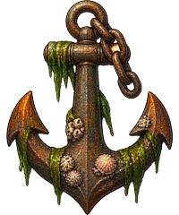 | https://chen1110.github.io/tongqian/guide/img/anchor.png | 200×240 | 铁锚（抛锚，200×240） |
https://chen1110.github.io/tongqian/guide/img/b_back.png | 96×96 | 返回 | |
https://chen1110.github.io/tongqian/guide/img/b_set.png | 96×96 | 设置 | |
https://chen1110.github.io/tongqian/guide/img/bg1.jpg | 720×1570 | 背景 720×1570 | |
https://chen1110.github.io/tongqian/guide/img/bg2.jpg | 720×1570 | 背景 720×1570 | |
https://chen1110.github.io/tongqian/guide/img/bg3.jpg | 720×1570 | 背景 720×1570 | |
https://chen1110.github.io/tongqian/guide/img/bg4.jpg | 720×1570 | 背景 720×1570 | |
https://chen1110.github.io/tongqian/guide/img/bg5.jpg | 720×1570 | 背景 第5章 野渡口 | |
https://chen1110.github.io/tongqian/guide/img/bg6.jpg | 720×1570 | 背景 第6章 芦苇荡 | |
https://chen1110.github.io/tongqian/guide/img/bg7.jpg | 720×1570 | 背景 第7章 龙王潭 | |
https://chen1110.github.io/tongqian/guide/img/bg8.jpg | 720×1570 | 背景 第8章 沉船湾 | |
https://chen1110.github.io/tongqian/guide/img/bg_dg.jpg | 720×1570 | 背景 720×1570 | |
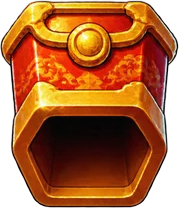 | https://chen1110.github.io/tongqian/guide/img/box.png | 180×208 | 钱匣（发射口） |
https://chen1110.github.io/tongqian/guide/img/btn.png | 400×124 | 大按钮底 | |
https://chen1110.github.io/tongqian/guide/img/burst.png | 256×234 | 撞钉爆闪（叠加 lighter） | |
https://chen1110.github.io/tongqian/guide/img/c_baguajing.png | 128×128 | 铜钱「八卦镜」 | |
https://chen1110.github.io/tongqian/guide/img/c_beibi.png | 128×128 | 铜钱「贝币」 | |
https://chen1110.github.io/tongqian/guide/img/c_dingfengzhu.png | 128×128 | 铜钱「定风珠」 | |
https://chen1110.github.io/tongqian/guide/img/c_fengling.png | 128×128 | 铜钱「风铃」 | |
https://chen1110.github.io/tongqian/guide/img/c_guqian.png | 128×128 | 铜钱「骨钱」 | |
https://chen1110.github.io/tongqian/guide/img/c_jinchan.png | 128×128 | 铜钱「金蟾钱」 | |
https://chen1110.github.io/tongqian/guide/img/c_leijimu.png | 128×128 | 铜钱「雷击木」 | |
https://chen1110.github.io/tongqian/guide/img/c_lingdangchuan.png | 128×128 | 铜钱「铃铛串」 | |
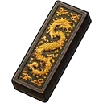 | https://chen1110.github.io/tongqian/guide/img/c_moding.png | 128×128 | 铜钱「墨锭」 |
https://chen1110.github.io/tongqian/guide/img/c_niwan.png | 128×128 | 铜钱「泥丸」 | |
https://chen1110.github.io/tongqian/guide/img/c_suiyin.png | 128×128 | 铜钱「碎银」 | |
https://chen1110.github.io/tongqian/guide/img/c_taomuzhu.png | 128×128 | 铜钱「桃木珠」 | |
https://chen1110.github.io/tongqian/guide/img/c_tieqian.png | 128×128 | 铜钱「铁钱」 | |
https://chen1110.github.io/tongqian/guide/img/c_tongqian.png | 128×128 | 铜钱「铜钱」 | |
https://chen1110.github.io/tongqian/guide/img/c_wudi.png | 128×128 | 铜钱「五帝钱」 | |
https://chen1110.github.io/tongqian/guide/img/c_xingdou.png | 128×128 | 铜钱「星斗钱」 | |
https://chen1110.github.io/tongqian/guide/img/c_yuchan.png | 128×128 | 铜钱「玉蝉」 | |
https://chen1110.github.io/tongqian/guide/img/c_yulin.png | 128×128 | 铜钱「鱼鳞钱」 | |
https://chen1110.github.io/tongqian/guide/img/c_yuqian.png | 128×128 | 铜钱「榆钱」 | |
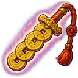 | https://chen1110.github.io/tongqian/guide/img/c_zhanyaojian.png | 128×128 | 铜钱「斩妖剑钱」 |
https://chen1110.github.io/tongqian/guide/img/c_zhaoyaojing.png | 128×128 | 铜钱「照妖镜」 | |
https://chen1110.github.io/tongqian/guide/img/c_zhenhunling.png | 128×128 | 铜钱「镇魂铃」 | |
https://chen1110.github.io/tongqian/guide/img/c_zhiqian.png | 128×128 | 铜钱「纸钱」 | |
https://chen1110.github.io/tongqian/guide/img/c_zhupian.png | 128×128 | 铜钱「竹片」 | |
https://chen1110.github.io/tongqian/guide/img/c_zhusha.png | 128×128 | 铜钱「朱砂丸」 | |
https://chen1110.github.io/tongqian/guide/img/cash.png | 128×100 | 备用 | |
https://chen1110.github.io/tongqian/guide/img/chest.png | 160×132 | 星数宝箱 | |
https://chen1110.github.io/tongqian/guide/img/chest_open.png | 160×128 | 宝箱已开 | |
https://chen1110.github.io/tongqian/guide/img/dan.png | 128×128 | 妖丹 | |
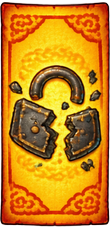 | https://chen1110.github.io/tongqian/guide/img/f_bixie.png | 110×230 | 符箓「辟邪符」 |
https://chen1110.github.io/tongqian/guide/img/f_dansha.png | 110×230 | 符箓「丹砂符」 | |
https://chen1110.github.io/tongqian/guide/img/f_dingxin.png | 110×230 | 符箓「定心符」 | |
https://chen1110.github.io/tongqian/guide/img/f_fenshen.png | 110×230 | 符箓「分身符」 | |
https://chen1110.github.io/tongqian/guide/img/f_huichun.png | 110×230 | 符箓「回春符」 | |
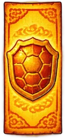 | https://chen1110.github.io/tongqian/guide/img/f_hushen.png | 110×230 | 符箓「护身符」 |
https://chen1110.github.io/tongqian/guide/img/f_jide.png | 110×230 | 符箓「积德符」 | |
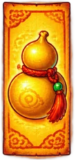 | https://chen1110.github.io/tongqian/guide/img/f_jubao.png | 110×230 | 符箓「聚宝符」 |
https://chen1110.github.io/tongqian/guide/img/f_kaimen.png | 110×230 | 符箓「开门红」 | |
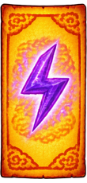 | https://chen1110.github.io/tongqian/guide/img/f_leifa.png | 110×230 | 符箓「雷法符」 |
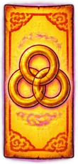 | https://chen1110.github.io/tongqian/guide/img/f_lianhuan.png | 110×230 | 符箓「连环符」 |
https://chen1110.github.io/tongqian/guide/img/f_niliu.png | 110×230 | 符箓「逆流符」 | |
https://chen1110.github.io/tongqian/guide/img/f_nu.png | 110×230 | 符箓「怒符」 | |
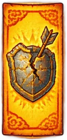 | https://chen1110.github.io/tongqian/guide/img/f_pojia.png | 110×230 | 符箓「破甲符」 |
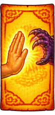 | https://chen1110.github.io/tongqian/guide/img/f_xianshou.png | 110×230 | 符箓「先手符」 |
https://chen1110.github.io/tongqian/guide/img/f_xiqian.png | 110×230 | 符箓「洗钱符」 | |
https://chen1110.github.io/tongqian/guide/img/f_yucai.png | 110×230 | 符箓「余财符」 | |
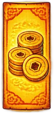 | https://chen1110.github.io/tongqian/guide/img/f_zhaocai.png | 110×230 | 符箓「招财符」 |
https://chen1110.github.io/tongqian/guide/img/fr_0.png | 128×120 | 珍品框 | |
https://chen1110.github.io/tongqian/guide/img/fr_1.png | 128×120 | 凡品框 | |
https://chen1110.github.io/tongqian/guide/img/fr_2.png | 128×120 | 良品框 | |
https://chen1110.github.io/tongqian/guide/img/fr_3.png | 128×120 | 绝品框 | |
https://chen1110.github.io/tongqian/guide/img/gourd.png | 180×237 | 葫芦 | |
https://chen1110.github.io/tongqian/guide/img/hpbar.png | 500×78 | 妖怪血条框 | |
https://chen1110.github.io/tongqian/guide/img/i_chan.png | 96×96 | 意图「缠」 | |
https://chen1110.github.io/tongqian/guide/img/i_claw.png | 96×96 | 扑击 | |
https://chen1110.github.io/tongqian/guide/img/i_fantan.png | 96×96 | 意图「翻潭」 | |
https://chen1110.github.io/tongqian/guide/img/i_fist.png | 96×96 | 蓄力/重击 | |
https://chen1110.github.io/tongqian/guide/img/i_lock.png | 96×96 | 封钉 | |
https://chen1110.github.io/tongqian/guide/img/i_paomao.png | 96×96 | 意图「抛锚」 | |
https://chen1110.github.io/tongqian/guide/img/i_qianmu.png | 96×96 | 意图「千目」 | |
https://chen1110.github.io/tongqian/guide/img/i_shield.png | 96×96 | 结界/护盾 | |
https://chen1110.github.io/tongqian/guide/img/i_shouchuan.png | 96×96 | 意图「收船钱」 | |
https://chen1110.github.io/tongqian/guide/img/i_swirl.png | 96×96 | 搅阵 | |
https://chen1110.github.io/tongqian/guide/img/i_zhangshui.png | 96×96 | 意图「涨水」 | |
https://chen1110.github.io/tongqian/guide/img/n_boss.png | 160×146 | 地图大妖关；招小妖意图 | |
https://chen1110.github.io/tongqian/guide/img/n_elite.png | 150×156 | 地图精英关 | |
https://chen1110.github.io/tongqian/guide/img/n_sign.png | 160×156 | 地图普通关 | |
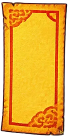 | https://chen1110.github.io/tongqian/guide/img/paper.png | 140×272 | 顿悟卡片 |
https://chen1110.github.io/tongqian/guide/img/pin_eye.png | 96×96 | 眼睛钉（千目） | |
https://chen1110.github.io/tongqian/guide/img/pin_feng.png | 96×96 | 符钉 | |
https://chen1110.github.io/tongqian/guide/img/pin_jin.png | 96×96 | 符钉 | |
https://chen1110.github.io/tongqian/guide/img/pin_lei.png | 96×96 | 符钉 | |
https://chen1110.github.io/tongqian/guide/img/pin_qing.png | 96×96 | 符钉 | |
https://chen1110.github.io/tongqian/guide/img/pin_qingxin.png | 96×96 | 符钉 | |
https://chen1110.github.io/tongqian/guide/img/pin_zhu.png | 96×96 | 符钉 | |
https://chen1110.github.io/tongqian/guide/img/role_daoshi.png | 400×400 | 角色 | |
https://chen1110.github.io/tongqian/guide/img/role_shusheng.png | 400×400 | 角色 | |
https://chen1110.github.io/tongqian/guide/img/role_tudi.png | 400×400 | 土地爷（对话用，面朝左，不翻转） | |
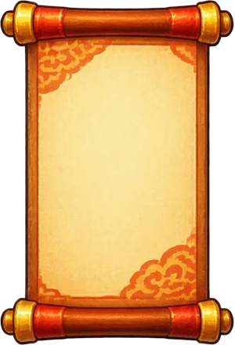 | https://chen1110.github.io/tongqian/guide/img/scroll.png | 300×440 | 卷轴弹窗底 |
https://chen1110.github.io/tongqian/guide/img/seal.png | 160×140 | 夜曲/生笋意图 | |
https://chen1110.github.io/tongqian/guide/img/star.png | 96×96 | 星 | |
https://chen1110.github.io/tongqian/guide/img/star_off.png | 96×96 | 空星 | |
https://chen1110.github.io/tongqian/guide/img/xiang.png | 100×128 | 香火；受香意图 | |
https://chen1110.github.io/tongqian/guide/img/yao_baidu.png | 400×400 | 妖怪「摆渡人」 | |
https://chen1110.github.io/tongqian/guide/img/yao_bangnv.png | 400×400 | 妖怪「蚌女」 | |
https://chen1110.github.io/tongqian/guide/img/yao_caoxie.png | 400×400 | 妖怪「草鞋妖」 | |
https://chen1110.github.io/tongqian/guide/img/yao_denglong.png | 400×400 | 妖怪「灯笼鬼」 | |
https://chen1110.github.io/tongqian/guide/img/yao_duanjiao.png | 400×400 | 妖怪「断角蛟」 | |
https://chen1110.github.io/tongqian/guide/img/yao_dujiao.png | 400×400 | 妖怪「独脚山魈」 | |
https://chen1110.github.io/tongqian/guide/img/yao_gudi.png | 400×400 | 妖怪「骨笛郎」 | |
https://chen1110.github.io/tongqian/guide/img/yao_lanluli.png | 400×400 | 妖怪「拦路狸」 | |
https://chen1110.github.io/tongqian/guide/img/yao_laoshu.png | 400×400 | 妖怪「老树精」 | |
https://chen1110.github.io/tongqian/guide/img/yao_laoyuan.png | 400×400 | 妖怪「老鼋将军」 | |
https://chen1110.github.io/tongqian/guide/img/yao_lidaxian.png | 400×400 | 妖怪「狸大仙」 | |
https://chen1110.github.io/tongqian/guide/img/yao_luoshui.png | 400×400 | 妖怪「落水书童」 | |
https://chen1110.github.io/tongqian/guide/img/yao_luwei.png | 400×400 | 妖怪「芦苇婆」 | |
https://chen1110.github.io/tongqian/guide/img/yao_nianxu.png | 400×400 | 妖怪「鲶须精」 | |
https://chen1110.github.io/tongqian/guide/img/yao_niqiu.png | 400×400 | 妖怪「泥鳅郎」 | |
https://chen1110.github.io/tongqian/guide/img/yao_nisu.png | 400×400 | 妖怪「泥塑假神」 | |
https://chen1110.github.io/tongqian/guide/img/yao_qianmu.png | 400×400 | 妖怪「千目蛙」 | |
https://chen1110.github.io/tongqian/guide/img/yao_qingzhu.png | 400×400 | 妖怪「青竹娘」 | |
https://chen1110.github.io/tongqian/guide/img/yao_shanxiao.png | 400×400 | 妖怪「山魈崽」 | |
https://chen1110.github.io/tongqian/guide/img/yao_shuigui.png | 400×400 | 妖怪「水鬼」 | |
https://chen1110.github.io/tongqian/guide/img/yao_yecha.png | 400×400 | 妖怪「铁锚夜叉」 | |
https://chen1110.github.io/tongqian/guide/img/yao_zhichuan.png | 400×400 | 妖怪「纸船灯」 | |
https://chen1110.github.io/tongqian/guide/img/yao_zhiren.png | 400×400 | 妖怪「纸人」 | |
https://chen1110.github.io/tongqian/guide/img/yao_zhujie.png | 400×400 | 妖怪「竹节精」 |
效果图（试玩版截图）
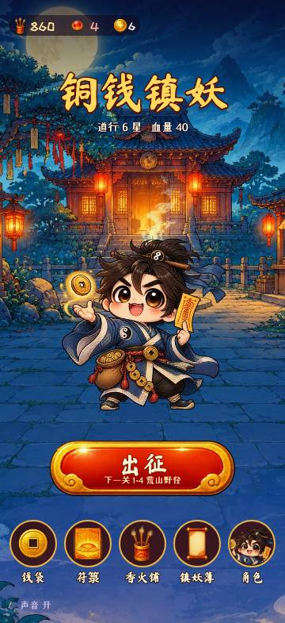
https://chen1110.github.io/tongqian/guide/shot/01_道观.jpg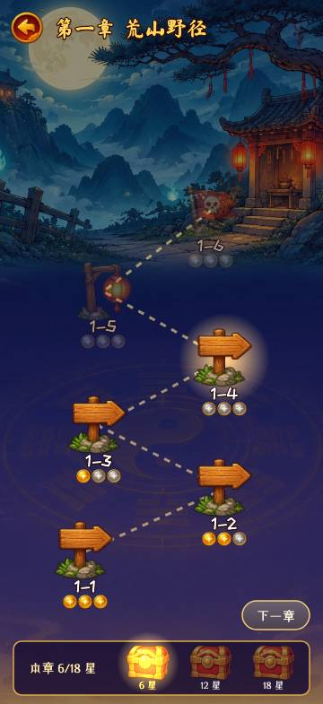
https://chen1110.github.io/tongqian/guide/shot/02_章节地图.jpg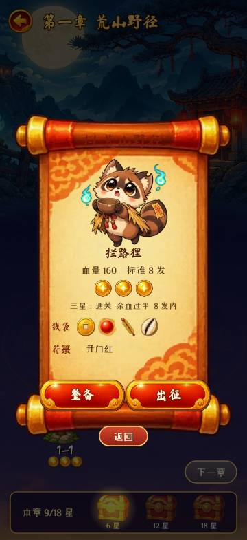
https://chen1110.github.io/tongqian/guide/shot/03_关前整备.jpg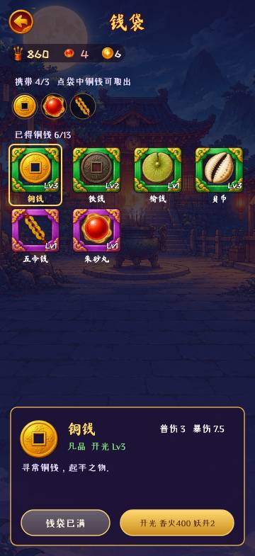
https://chen1110.github.io/tongqian/guide/shot/04_钱袋.jpg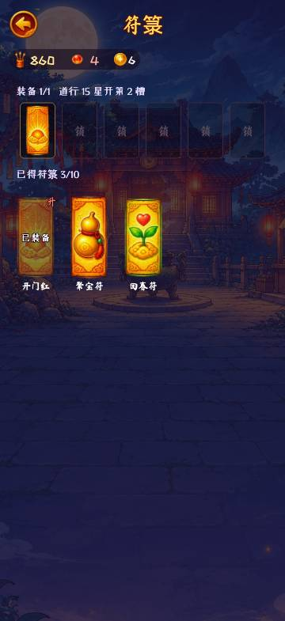
https://chen1110.github.io/tongqian/guide/shot/05_符箓.jpg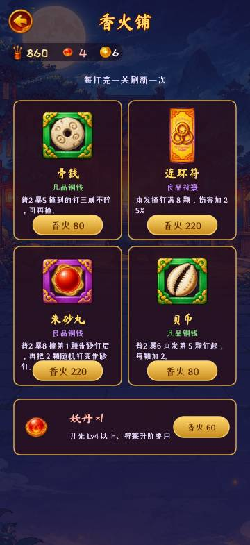
https://chen1110.github.io/tongqian/guide/shot/06_香火铺.jpg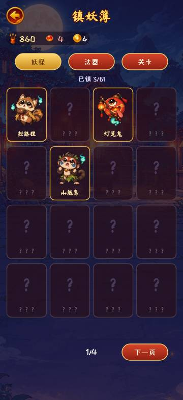
https://chen1110.github.io/tongqian/guide/shot/07_镇妖簿.jpg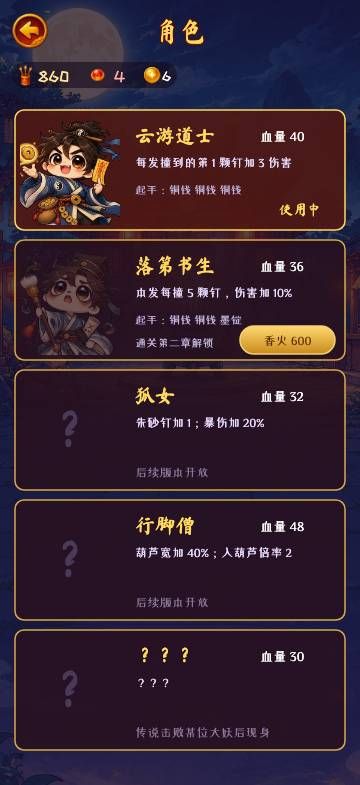
https://chen1110.github.io/tongqian/guide/shot/08_角色.jpg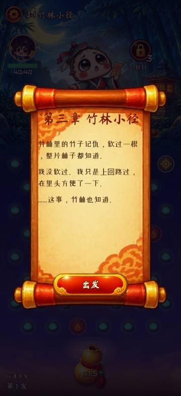
https://chen1110.github.io/tongqian/guide/shot/09_章节开场剧情.jpg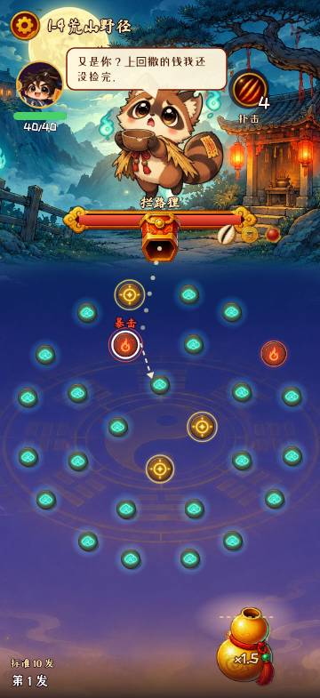
https://chen1110.github.io/tongqian/guide/shot/10_战斗_瞄准.jpg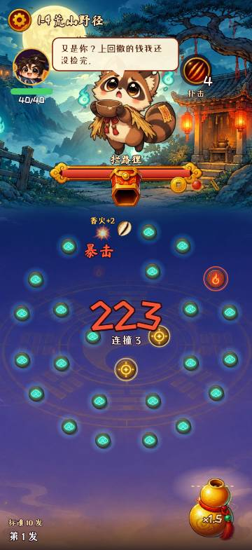
https://chen1110.github.io/tongqian/guide/shot/11_战斗_飞行.jpg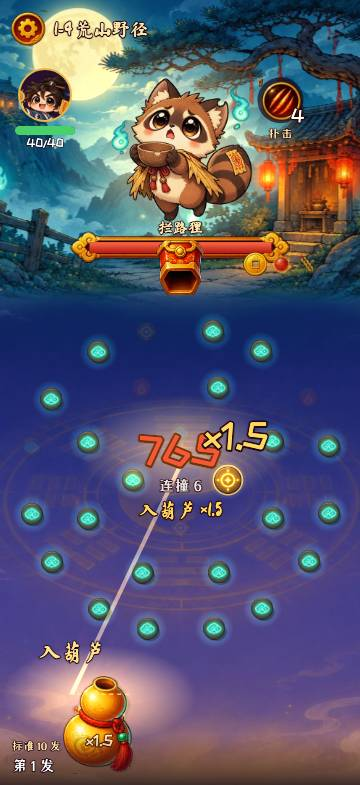
https://chen1110.github.io/tongqian/guide/shot/12_战斗_妖怪行动.jpg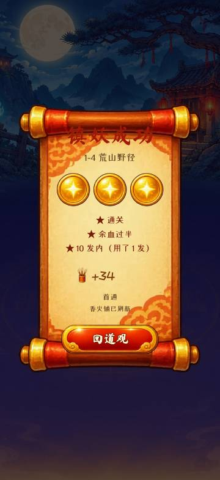
https://chen1110.github.io/tongqian/guide/shot/13_结算.jpg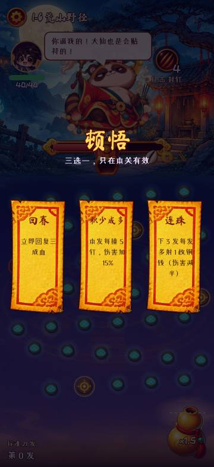
https://chen1110.github.io/tongqian/guide/shot/14_顿悟三选一.jpg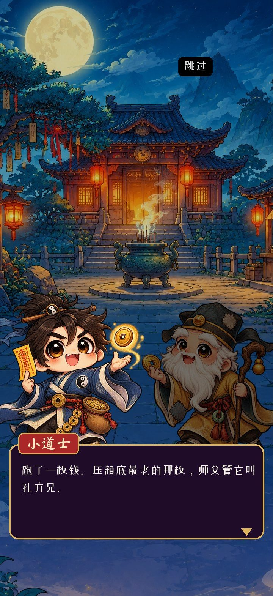
https://chen1110.github.io/tongqian/guide/shot/15_序幕对话.jpg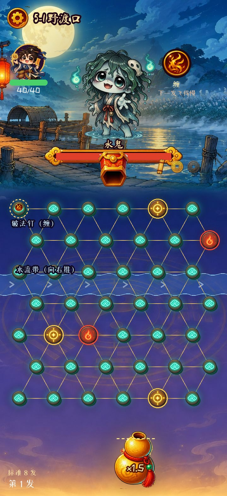
https://chen1110.github.io/tongqian/guide/shot/19_水泽战斗.jpg